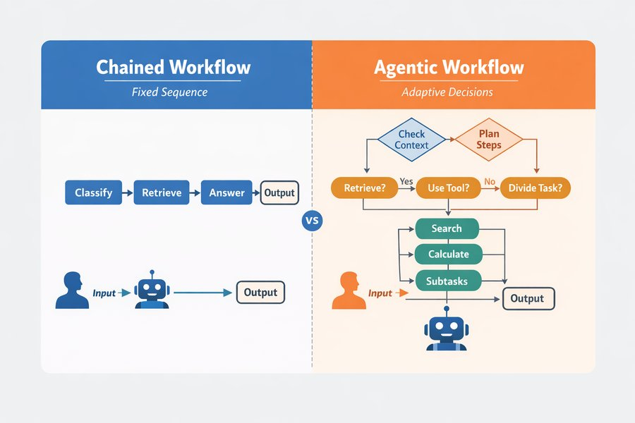
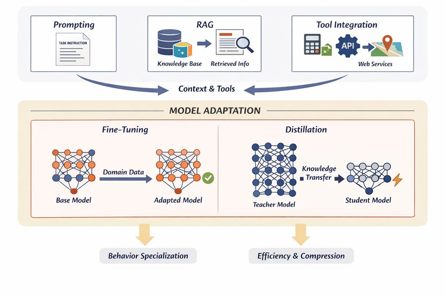
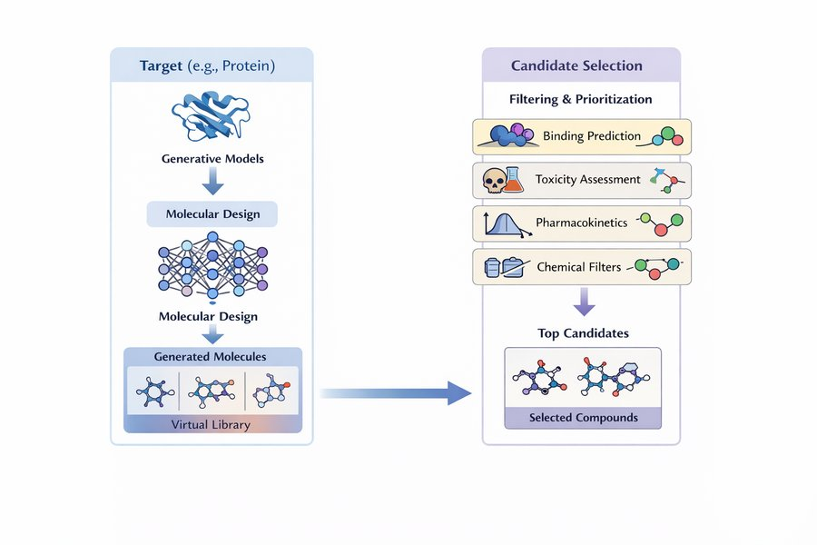

L’ospedale ha avviato un progetto pilota. Su ogni computer della terapia intensiva ora c’è un assistente per le linee guida: una casella in cui il personale può scrivere una domanda in linguaggio corrente e ricevere una risposta in pochi secondi. Seán, il farmacista di reparto, lo prova stasera su un problema reale. La signora Aoife Byrne, 71 anni, ricoverata per sepsi, è in terapia con vancomicina e piperacillina–tazobactam, e la sua creatinina è salita da 1,0 a 1,4 mg/dL in 36 ore. Seán scrive: “Dobbiamo cambiare la vancomicina, e ogni quanto dobbiamo controllare la creatinina?”
La risposta arriva subito: sei punti numerati, sicuri, ben scritti, con il riferimento a una rivista scientifica in fondo. La dott.ssa Emma Walsh, l’intensivista, legge da sopra la sua spalla. Quasi tutto sembra corretto. Una riga no: “sospendere immediatamente la vancomicina e sostituirla con la gentamicina”. E nessuno dei due ha mai sentito parlare di quella rivista.
In tutto questo libro Emma ha usato modelli di rischio per decidere se Aoife abbia bisogno del bundle nefroprotettivo. Un modello le dava un numero; lei sapeva da dove veniva e quanto fosse accurato. Qui è diverso. Di che cosa è fatto questo sistema? Quando Seán dovrebbe credergli? Chi è responsabile se lui segue la risposta, e l’ospedale aveva almeno il diritto di installarlo? Questo capitolo risponde a queste domande.
Dietro l’assistente per le linee guida ci sono diversi componenti. Classifica ciascuno come parte del modello linguistico vero e proprio, della fase di recupero che va a cercare le informazioni, come uno strumento che il sistema può richiamare oppure come sorveglianza umana. Prova a indovinare: il capitolo spiega ognuno di questi termini.
Componente
La tua etichetta
Un transformer addestrato su un'enorme raccolta di testi per prevedere la parola successiva.
Una ricerca nei documenti di linee guida dell'ospedale che restituisce, per ogni domanda, i tre paragrafi più pertinenti.
Una calcolatrice che, quando richiesto, calcola la clearance della creatinina con l'equazione di Cockcroft–Gault.
Seán controlla ogni dose suggerita prima che venga trascritta in terapia.
Un addestramento aggiuntivo in cui alcune persone hanno confrontato coppie di risposte, perché il modello imparasse a seguire le istruzioni con cortesia e a rifiutare le richieste pericolose.
Come usare questo capitolo
Inizi da qui?
Questo capitolo riunisce idee di molti capitoli precedenti. In breve:
Decisioni e qualità decisionale (Definizione 1.4, Sezione 1.5). Una decisione sceglie un’alternativa da un insieme \(\mathcal{A}\) sulla base di uno stato di conoscenza \(\mathcal{K}\). La qualità decisionale è una catena di sei anelli (inquadramento, alternative, informazioni, valori, ragionamento, impegno), e una decisione è forte quanto il suo anello più debole. Nel Capitolo 1 l’équipe del Reparto 7 ha deciso che conviene avviare il bundle nefroprotettivo quando il rischio di Aoife di sviluppare un danno renale acuto (AKI) supera 0,25.
Le macchine verificano la coerenza, non la verità (Sezione 1.6). Un sistema che produce testo plausibile non lo ha confrontato con il mondo.
Il testo come vettori (Capitolo 15). Un documento diventa un vettore di pesi delle parole; con TF-IDF pesano di più le parole frequenti in un documento ma rare nella raccolta, e due documenti si confrontano con il coseno dell’angolo tra i loro vettori.
Modelli linguistici (Capitolo 16). Un modello linguistico assegna una probabilità a ogni possibile token successivo \(w_t\) dati i token precedenti, \(P(w_t \mid w_{<t})\); viene addestrato minimizzando l’entropia incrociata dei token successivi reali e genera testo per campionamento, con una temperatura che regola quanto il campionamento sia audace. Gli embedding sono vettori appresi in cui le parole di significato simile stanno vicine.
Il transformer (Capitolo 17). L’attenzione permette a ogni posizione di guardare tutte le posizioni precedenti; una pila di blocchi transformer con maschera causale, addestrata a prevedere il token successivo, è un modello solo decoder (decoder-only) della famiglia GPT.
Apprendimento per trasferimento (Capitolo 7): una rete addestrata su un grande dataset viene rifinita (fine-tuning) su uno più piccolo. Calibrazione (Capitolo 5): un modello è calibrato se, tra i casi a cui assegna l’80 %, circa l’80 % è positivo. Astensione (Capitolo 8): un modello che sa quanto è incerto può rinviare i casi difficili a una persona.
Apprendimento per rinforzo (Capitolo 14): un agente segue una politica\(\pi\) e impara dalle ricompense. Gli studi randomizzati (Capitolo 13) sono la prova più forte che un trattamento funziona.
Esempio
Chi o che cosa
Esito
Volti che incontrerai
1Terapia intensiva del Reparto 7
1.250 pazienti di terapia intensiva in 4 ospedali
variazione della creatinina in 48 h (danno renale acuto se ≥ 0,3 mg/dL)
Aoife (71 anni, sepsi, rischio borderline), Tomás (54 anni, rischio basso), Priya (38 anni, rischio alto); la dott.ssa Emma Walsh; Seán, il farmacista
2Studio ONCO-1
1.000 pazienti randomizzati a ricevere o meno la chemioterapia
riduzione del tumore (%)
i pazienti #0042 e #0917
3HomeBeat
500 persone che indossano uno smartwatch a casa
punteggio di stress, evento di peggioramento
Lena
4CellWorks
420 lotti di produzione di una terapia cellulare
punteggio di potenza
il lotto CW-118
Tutti e quattro i dataset sono simulati e si possono scaricare dall’appendice sui dati. La presentazione completa si trova in Sezione 1.1.
Questo capitolo accompagna un modello linguistico fuori dal laboratorio e dentro il reparto. Vedrai come un sistema che predice la parola successiva viene trasformato in un assistente, come prompt, recupero e strumenti ne plasmano il comportamento, come valutarlo e coglierlo sul fatto mentre inventa, quali leggi gli si applicano, come l’IA ha contribuito a portare un nuovo farmaco fino a uno studio clinico e quale posto spetta all’IA nella catena della qualità decisionale del Capitolo 1. Comprende undici sezioni e un Laboratorio, otto verifiche rapide, tre widget “Prova tu”, una sfida e tre missioni di programmazione in R e Python. Calcola circa due ore. In questo capitolo non gira nessun modello linguistico: tutte le risposte che leggerai sono state scritte in anticipo, e ogni numero viene da piccoli file che puoi scaricare e controllare.
La notazione in sintesi (solo per consultazione)
Simbolo
Significato
Sezione
\(w_t\), \(w_{<t}\)
il token in posizione \(t\); tutti i token che lo precedono
I Capitoli dal 15 al 17 hanno costruito un modello linguistico partendo da zero: il testo è diventato token e vettori, un modello ha imparato ad assegnare una probabilità a ogni possibile token successivo e il transformer ha reso quel modello grande e veloce. Ingrandito e addestrato su una buona parte del mondo scritto, un modello del genere sa continuare una frase, riassumere un documento, rispondere a una domanda o tradurre un paragrafo, sempre calcolando ripetutamente \(P(w_t \mid w_{<t})\) e scegliendo un token successivo. Modelli di questo tipo oggi si chiamano modelli fondativi.
Definizione 19.1 (Modello fondativo) Un modello fondativo (foundation model) è un modello di grandi dimensioni addestrato su dati ampi, di solito con autosupervisione su larga scala, che può essere adattato a un’ampia gamma di compiti a valle (Bommasani et al. 2021). Un grande modello linguistico (LLM, large language model) è un modello fondativo per il testo; la maggior parte degli LLM attuali sono transformer solo decoder (Capitolo 17; Vaswani et al. (2017)) con miliardi di parametri.
Un modello fondativo fornisce capacità. Da solo non fornisce ciò di cui un reparto ha bisogno: risposte basate sulle linee guida di questo ospedale, un’aritmetica esatta per una dose, una traccia di chi ha chiesto che cosa, un modo per dire “non lo so” e una persona che controlla prima che qualcosa arrivi al paziente. Queste cose vengono dal sistema costruito attorno al modello (Figura 19.1): un’interfaccia che coglie ciò che l’utente vuole, un flusso di lavoro che decide i passaggi, l’accesso a conoscenze esterne, strumenti, memoria della conversazione e monitoraggio.
Figura 19.1: Da un modello fondativo a un sistema applicativo. Il modello fornisce una generazione di uso generale (testi, riassunti, risposte, trasformazioni); il sistema aggiunge l’intenzione dell’utente, l’orchestrazione del flusso di lavoro, le conoscenze esterne, gli strumenti, la memoria e il monitoraggio.
Questa distinzione organizza l’intero capitolo. Un modello prevede ciò che probabilmente viene dopo; un sistema organizza quelle previsioni in un comportamento che serve a uno scopo. Molti dei fallimenti che finiscono sui giornali (affermazioni fluide ma false, fatti superati, risposte impossibili da verificare) non sono difetti del transformer. Sono ciò che ci si deve aspettare da un generatore probabilistico di testo usato senza la struttura che lo circonda (Thirunavukarasu et al. 2023). L’assistente di Seán, come vedremo, ha un modello al suo centro; che sia sicuro dipende soprattutto da tutto il resto.
19.2 Come si costruisce un modello fondativo
Il modello dentro l’assistente di Seán è passato attraverso tre fasi di addestramento (Figura 19.2). Ogni fase usa un tipo diverso di dati e modifica il comportamento del modello in modo diverso.
Figura 19.2: Le tre fasi che trasformano un transformer in un modello assistente.
19.2.1 Fase 1: preaddestramento
Definizione 19.2 (Preaddestramento, corpus di preaddestramento e leggi di scala) Il preaddestramento (pretraining) adatta un modello linguistico a un corpus di preaddestramento molto ampio (pagine web, libri, articoli scientifici, codice), minimizzando l’entropia incrociata del token successivo, esattamente l’obiettivo del Capitolo 16: \[
\mathcal{L}_{\text{pre}}(\theta) = -\sum_{t} \log P_\theta(w_t \mid w_{<t}) .
\qquad(19.1)\] Le leggi di scala (scaling laws) sono l’osservazione empirica che questa perdita diminuisce in modo regolare e prevedibile, come una legge di potenza, al crescere del numero di parametri, della quantità di dati e del budget di calcolo (Kaplan et al. 2020; Hoffmann et al. 2022).
Nulla in Equazione 19.1 parla di medicina, di verità o di utilità. Il modello viene premiato se prevede il testo che di solito viene dopo. Per prevedere bene la parola successiva di un manuale di farmacologia deve assimilare molta farmacologia, ed è per questo che i modelli grandi “sanno” così tanto (Brown et al. 2020). Ma impara anche tutto ciò che è comune nel suo corpus, comprese pratiche superate, errori e pregiudizi, e non impara assolutamente nulla di ciò che è successo dopo la raccolta del corpus. Un modello base che ha ricevuto solo il preaddestramento non risponde alle domande: continua il testo. Chiedigli “Qual è il vasopressore di prima linea nello shock settico?” e potrebbe benissimo rispondere con altre tre domande d’esame, perché è ciò che spesso segue una riga del genere sul web.
19.2.2 Fase 2: ottimizzazione su istruzioni
Definizione 19.3 (Ottimizzazione su istruzioni) L’ottimizzazione su istruzioni (instruction tuning, o fine-tuning supervisionato) prosegue l’addestramento di un modello preaddestrato su una raccolta di prompt \(x\) abbinati a buone risposte \(y\) scritte da persone, minimizzando l’entropia incrociata dei token della risposta dato il prompt, \(-\sum_{t \in y} \log P_\theta(w_t \mid x, w_{<t})\)(Wei, Bosma, et al. 2022; Ouyang et al. 2022).
L’obiettivo è lo stesso di prima; cambiano solo i dati. Qualche migliaio di esempi del tipo “istruzione → risposta utile” basta a trasformare un continuatore di testo in un modello che fa ciò che gli si chiede, perché la capacità c’era già e va appreso solo il formato del comportamento. È l’apprendimento per trasferimento (Capitolo 7) applicato al comportamento.
19.2.3 Fase 3: ottimizzazione sulle preferenze
Per le persone è più facile dire quale di due risposte sia migliore che scrivere la risposta perfetta. L’ottimizzazione sulle preferenze (preference tuning) sfrutta proprio questo. Alcuni valutatori umani vedono un prompt \(x\) e due risposte, \(y_A\) e \(y_B\), e dicono quale preferiscono. Un modello di ricompensa\(r(x, y)\), a sua volta una rete neurale, viene addestrato in modo che le risposte preferite ottengano punteggi più alti, usando il modello di Bradley–Terry per i confronti a coppie (Bradley e Terry 1952): \[
P(y_A \text{ preferita a } y_B \mid x) = \sigma\big(r(x, y_A) - r(x, y_B)\big),
\qquad(19.2)\] dove \(\sigma\) è la funzione logistica del Capitolo 5. Il modello di ricompensa è, letteralmente, una regressione logistica sulla differenza tra due punteggi.
Poi arriva il passaggio che dà il nome al metodo. Il modello linguistico viene ora visto come una politica\(\pi_\theta\) (Capitolo 14): dato uno stato (il prompt) sceglie delle azioni (i token) e, alla fine di una risposta, riceve una ricompensa \(r(x, y)\). L’apprendimento per rinforzo regola \(\theta\) per ottenere più ricompensa, mentre una penalità mantiene la nuova politica vicina al modello ottimizzato su istruzioni, \(\pi_{\text{ref}}\): \[
\max_\theta \;\; \mathbb{E}_{y \sim \pi_\theta(\cdot \mid x)}\big[r(x, y)\big] \;-\; \lambda\, \mathrm{KL}\big(\pi_\theta \,\|\, \pi_{\text{ref}}\big).
\qquad(19.3)\] Il termine KL (una misura di quanto due distribuzioni di probabilità siano diverse (Kullback e Leibler 1951)) impedisce al modello di scivolare verso testi strani che per caso ingannano il modello di ricompensa; \(\lambda\) stabilisce con quanta forza.
Definizione 19.4 (Ottimizzazione sulle preferenze: RLHF e DPO) L’apprendimento per rinforzo dal feedback umano (RLHF) addestra un modello di ricompensa sui confronti umani tra risposte (Equazione 19.2) e poi ottimizza il modello linguistico, visto come una politica, per massimizzare quella ricompensa con una penalità per l’allontanamento dal modello di partenza (Equazione 19.3), di solito con l’algoritmo PPO (Christiano et al. 2017; Schulman et al. 2017; Ouyang et al. 2022). L’ottimizzazione diretta delle preferenze (DPO) arriva a un risultato simile senza un modello di ricompensa separato né apprendimento per rinforzo, adattando la politica direttamente ai confronti con una perdita logistica (Rafailov et al. 2023).
L’ottimizzazione sulle preferenze è il motivo per cui gli assistenti sono cortesi, ordinati e pronti a dire “consulta un medico”. È anche il motivo per cui possono essere compiacenti e troppo sicuri di sé: i valutatori tendono a preferire risposte fluide, complete e sicure, e il modello impara a dare alle persone ciò che premiano (Sharma et al. 2024). L’ottimizzazione sulle preferenze plasma stile e prudenza; non aggiunge conoscenze che al modello mancavano e non gli fa verificare i fatti.
Le linee guida dell’ospedale sono state aggiornate il mese scorso. Quale fase dell’addestramento insegnerebbe al modello la linea guida nuova?
19.3 Prompt: orientare senza riaddestrare
Il modo più semplice di usare un modello è dargli un prompt e leggerne la risposta. Un prompt non programma il modello in senso classico: non definisce alcuna sequenza di operazioni. Cambia il contesto\(w_{<t}\) su cui viene calcolata ogni probabilità del token successivo, e così rimodella l’intera distribuzione da cui la risposta viene estratta. Lo stesso modello si comporta in modo molto diverso a seconda di come il contesto è formulato.
Definizione 19.5 (Prompt, prompt di sistema, prompt few-shot e a catena di ragionamento) Un prompt è il testo dato a un modello linguistico come contesto per la sua risposta. Le applicazioni di solito antepongono un prompt di sistema che l’utente non vede e che stabilisce il ruolo, le regole e il formato (“Sei l’assistente per le linee guida del Reparto 7. Rispondi solo in base ai passaggi forniti…”). Il prompt zero-shot contiene solo l’istruzione; il prompt few-shot aggiunge al prompt qualche esempio svolto del compito (Brown et al. 2020); il prompt a catena di ragionamento (chain-of-thought) chiede, o mostra, passaggi intermedi di ragionamento prima della risposta (Wei, Wang, et al. 2022).
Prendi la richiesta “Spiega il ruolo del TNF-alfa nell’infiammazione.” Senza altre istruzioni il modello produce una spiegazione generale. “Spiega il ruolo del TNF-alfa nell’infiammazione in tre punti elenco, per uno studente del primo anno di medicina” produce qualcosa di più breve e semplice; “Riassumi il ruolo del TNF-alfa nell’infiammazione usando solo vie meccanicistiche” produce qualcosa di più denso. Il compito è lo stesso; la formulazione sposta il paesaggio delle probabilità. Un prompt few-shot per l’assistente di Seán potrebbe mostrare due esempi di una domanda, il passaggio della linea guida su cui si basa e una risposta che cita quel passaggio, in modo che il modello imiti lo schema.
Tre fatti sui prompt contano nella pratica. Primo, le risposte sono sensibili alla formulazione, all’ordine delle informazioni e alla temperatura di campionamento del Capitolo 16: la stessa domanda posta due volte può ricevere due risposte diverse, quindi ogni valutazione deve usare prompt fissi ed esecuzioni ripetute. Secondo, il testo della catena di ragionamento non è una finestra sul modo in cui la risposta è stata calcolata; è altro testo generato, utile per i controlli ma senza garanzia di essere la vera ragione della risposta (Turpin et al. 2023). Terzo, un singolo prompt deve contenere sia il compito sia la procedura, e quando i compiti crescono diventa fragile.
La concatenazione di prompt (prompt chaining) affronta il terzo punto suddividendo un compito in passaggi, ciascuno una chiamata separata il cui output alimenta la successiva. Passando dallo spiegare il TNF-alfa al proporre una terapia, una catena potrebbe (1) produrre una spiegazione strutturata della via, (2) individuare i punti in cui la via potrebbe essere bloccata, (3) raccogliere ciò che si sa sugli inibitori esistenti e sulle loro prove cliniche e (4) sintetizzare una proposta. Ogni output intermedio può essere esaminato, corretto o scartato, così un errore può essere localizzato nel passaggio in cui è nato invece di restare sepolto in un’unica risposta opaca. Il passaggio 3, però, chiede fatti, cioè proprio ciò che un modello linguistico da solo non può garantire. La prossima sezione mostra come li fornisce un sistema.
19.4 Generazione aumentata dal recupero
Le conoscenze di un modello linguistico restano congelate nei suoi parametri alla fine dell’addestramento, il modello non sa dire da dove venga un fatto e non sa nulla delle regole locali del Reparto 7. Il rimedio più diffuso è cercare prima i fatti e consegnarli al modello insieme alla domanda (Lewis et al. 2020).
Definizione 19.6 (Generazione aumentata dal recupero (RAG), frammento, retriever, fondatezza) Nella generazione aumentata dal recupero (RAG, retrieval-augmented generation), un sistema risponde a una domanda in tre passaggi: un retriever cerca in una raccolta di documenti, suddivisi in brevi passaggi chiamati frammenti (chunk), e restituisce i \(k\) frammenti più simili alla domanda; i frammenti vengono inseriti nel prompt con l’istruzione di rispondere in base a essi; il modello linguistico genera la risposta (Lewis et al. 2020). Una risposta è fondata sulle fonti (grounded) quando ogni sua affermazione è supportata dai passaggi recuperati, idealmente con la citazione del passaggio che la supporta.
Figura 19.3: Generazione aumentata dal recupero nell’assistente per le linee guida del Reparto 7.
Il retriever non è una novità per te. Nel Capitolo 15 un documento è diventato un vettore TF-IDF e due documenti sono stati confrontati con il coseno dell’angolo tra i loro vettori (Spärck Jones 1972; Salton e Buckley 1988). La RAG usa esattamente questo, con la domanda nel ruolo di un documento molto breve. Per ciascuno dei \(J\) frammenti e ogni parola \(w\), il peso è il numero di occorrenze della parola nel frammento per la sua frequenza inversa nei documenti, \(\mathrm{idf}(w) = \ln\!\big((1 + J)/(1 + \mathrm{df}(w))\big) + 1\), dove \(\mathrm{df}(w)\) è il numero di frammenti che contengono \(w\); le parole rare pesano di più. Il punteggio del frammento \(j\) per la query è \[
\text{punteggio}(\mathbf{q}, \mathbf{d}_j) = \frac{\mathbf{q} \cdot \mathbf{d}_j}{\lVert \mathbf{q} \rVert \, \lVert \mathbf{d}_j \rVert} ,
\qquad(19.4)\] e se tutti i vettori sono stati riscalati a lunghezza 1 il punteggio è semplicemente il prodotto scalare. I sistemi in produzione spesso sostituiscono i vettori TF-IDF con embedding densi prodotti da una rete neurale (Capitolo 16), così che “renale” possa corrispondere a “rene” (Karpukhin et al. 2020), oppure combinano le due cose; la logica della pipeline resta la stessa.
L’assistente del Reparto 7 cerca in una piccola raccolta di 31 frammenti tratti da 11 documenti locali: il bundle per l’AKI, le linee guida sulla vancomicina e sulla gentamicina, la linea guida sulla sepsi, alcune procedure degli altri esempi ricorrenti e così via. La raccolta è stata scritta per questo libro, per illustrare il recupero, ed è in inglese; non è un’indicazione clinica. Puoi leggere ogni frammento nel file di dati.
Ispeziona il retriever. Scegli una domanda, o scrivine una tua, e guarda quali frammenti restituisce il retriever TF-IDF, con i loro punteggi del coseno; le parole che corrispondono alla query sono evidenziate. Poiché le linee guida sono in inglese, anche le domande vanno scritte in inglese. Più sotto puoi aprire il prompt che il sistema invierebbe al modello linguistico. Obiettivo: prova almeno tre domande, tra cui “What is the maximum dose of rentosertib?” (“Qual è la dose massima di rentosertib?”; il rentosertib è un farmaco che incontreremo nella Sezione 19.9 e che non compare da nessuna parte nelle linee guida). Osserva che cosa restituisce il retriever.
ragCorpus =FileAttachment("data/ch19_guidelines.csv").csv()ragIndex = {const stop =newSet(["a","an","and","are","as","at","be","by","can","do","does","for","from","has","have","how","i","if","in","is","it","its","not","of","on","or","our","should","so","that","the","their","them","then","there","these","they","this","to","was","we","what","when","which","while","who","will","with","without","you","been","into","than","after","before","more","most","also","all","any","every","each","may","only","other","such","whenever","where","one","two"]);const tok = s => s.toLowerCase().split(/[^a-z0-9]+/).filter(w => w.length>=2&&!stop.has(w));const docs = ragCorpus.map(d =>tok(d.section+" "+ d.text));const J = docs.length, df =newMap(); docs.forEach(ws =>newSet(ws).forEach(w => df.set(w, (df.get(w) ||0) +1)));const idf =newMap([...df].map(([w, n]) => [w,Math.log((1+ J) / (1+ n)) +1]));const vec = ws => {const v =newMap(); ws.forEach(w => { if (idf.has(w)) v.set(w, (v.get(w) ||0) +1); });let ss =0;for (const [w, c] of v) { const x = c * idf.get(w); v.set(w, x); ss += x * x; }const n =Math.sqrt(ss);if (n >0) for (const [w, x] of v) v.set(w, x / n);return v; };return {tok,vecs: docs.map(vec),query: q =>vec(tok(q))};}viewof ragPreset = Inputs.select(newMap([ ["La domanda di Seán (scena iniziale)","Mrs Byrne is on vancomycin and piperacillin-tazobactam, and her creatinine rose from 1.0 to 1.4 mg/dL in 36 hours. Should we change the vancomycin, and how often should we check creatinine?"], ["How often should creatinine be checked while the bundle is active?","How often should creatinine be checked while the bundle is active?"], ["Should vancomycin be stopped when creatinine is rising?","Should vancomycin be stopped when creatinine is rising?"], ["Can gentamicin be used in acute kidney injury?","Can gentamicin be used in acute kidney injury?"], ["Which renal-protective medicines must be withheld?","Which renal-protective medicines must be withheld?"], ["Can a batch that failed the potency test be released?","Can a batch that failed the potency test be released?"], ["What is the maximum dose of rentosertib?","What is the maximum dose of rentosertib?"]]), {label:"Scegli una domanda"})viewof ragQuery = Inputs.text({value: ragPreset,label:"…oppure modificala (in inglese)",width:560})viewof ragK = Inputs.range([1,5], {value:3,step:1,label:"Frammenti recuperati, k"})ragHits = {const qv = ragIndex.query(ragQuery);const scored = ragCorpus.map((d, j) => {let s =0;for (const [w, x] of qv) s += x * (ragIndex.vecs[j].get(w) ||0);return {...d,score: s}; });return {qterms:newSet(qv.keys()),hits: scored.sort((a, b) => b.score- a.score).slice(0, ragK)};}{const esc = s => s.replace(/&/g,"&").replace(/</g,"<");const mark = t =>esc(t).replace(/[A-Za-z0-9]+/g, m => ragHits.qterms.has(m.toLowerCase()) ?`<mark>${m}</mark>`: m);const div =document.createElement("div"); div.innerHTML= ragHits.qterms.size===0?"<p><em>Nessuna delle parole di questa domanda compare nelle linee guida: tutti i punteggi sono 0.</em></p>": ragHits.hits.map((h, i) =>`<div style="border:1px solid var(--aihs-border);border-radius:8px;padding:0.45rem 0.7rem;margin:0.4rem 0"> <strong>${i +1}. [${h.chunk_id}]</strong> ${esc(h.document)}, <em>${esc(h.section)}</em> <span style="float:right">punteggio <strong>${h.score.toFixed(3)}</strong> <span style="display:inline-block;width:80px;height:8px;border-radius:4px;background:var(--aihs-border);vertical-align:middle;overflow:hidden"> <span style="display:block;height:100%;width:${Math.min(100,100* h.score)}%;background:var(--aihs-accent)"></span></span></span> <div style="font-size:0.92em;margin-top:0.25rem">${mark(h.text)}</div></div>`).join("");return div;}
{const p = ["Sei l'assistente per le linee guida del Reparto 7. Rispondi SOLO in base ai passaggi numerati qui sotto.","Cita l'identificativo del passaggio per ogni affermazione. Se i passaggi non contengono la risposta,","di' che le linee guida non trattano l'argomento e suggerisci di rivolgersi al farmacista di reparto.",""].concat(ragHits.hits.map(h =>`[${h.chunk_id}] ${h.text}`)).concat(["","Domanda: "+ ragQuery]).join("\n");const det =document.createElement("details"); det.innerHTML="<summary>Mostra il prompt che il sistema invierebbe al modello linguistico</summary>";const pre =document.createElement("pre"); pre.style.whiteSpace="pre-wrap"; pre.style.fontSize="0.85em"; pre.textContent= p; det.appendChild(pre);return det;}
ragSeen =newSet(){ ragSeen.add(ragQuery.trim().toLowerCase());const done = ragSeen.size>=3&& [...ragSeen].some(q => q.includes("rentosertib"));if (done &&window.aihs) window.aihs.complete("ch19-tryit-rag");returnhtml`<p style="font-size:0.92em">Domande provate: <strong>${ragSeen.size}</strong>${done ?". ✓ Checkpoint raggiunto: ora leggi il testo sotto il widget.":""}</p>`;}
Dall’ispettore escono tre lezioni, e ciascuna corrisponde a un modo in cui falliscono i sistemi RAG reali.
Il retriever restituisce sempre qualcosa. Per la domanda sul rentosertib, il frammento in cima è VAN-1, con un punteggio di 0,497, più alto del punteggio del frammento giusto per la domanda sul monitoraggio (AKI-4, 0,343). Corrisponde solo perché entrambi contengono la parola dose. Una soglia sul punteggio, da sola, non distingue ciò che è pertinente da ciò che non lo è: devono farlo l’istruzione “se i passaggi non contengono la risposta, dillo” e un controllo della risposta rispetto ai passaggi.
Le parole non sono significati.“Which renal-protective medicines must be withheld?” (“Quali farmaci nefroprotettivi vanno sospesi?”) non trova nulla di utile (punteggio migliore 0,130): la linea guida dice kidney, nephrotoxic, hold e pause, mai renal-protective né withheld. Gli embedding densi riducono questo problema; non lo eliminano.
Ciò che non viene recuperato non può essere usato. Scegli la domanda di Seán della scena iniziale: il retriever restituisce VAN-5, VAN-4, LAB-2 ma non la regola di monitoraggio del bundle (AKI-4), perché la domanda usa check (“controllare”) e la linea guida dice measured (“misurata”). Una risposta costruita su quei passaggi tacerà, o sbaglierà, su quanto spesso misurare la creatinina.
Altri modi di fallire non emergono in una raccolta piccola: frammenti di versioni diverse di una linea guida che si contraddicono, un passaggio tagliato a metà di una tabella, modelli che prestano meno attenzione ai passaggi al centro di un prompt lungo (Liu et al. 2024) e documenti che contengono istruzioni nascoste rivolte al modello, che il modello potrebbe eseguire: la cosiddetta prompt injection(Greshake et al. 2023). La RAG sposta il problema dal sapere al trovare, e trovare si può testare: è questo il suo grande vantaggio.
Per la domanda sul rentosertib, il retriever restituisce un passaggio sulla vancomicina con un punteggio piuttosto alto. Che cosa dovrebbe fare un assistente ben progettato?
Fai tu il retriever. I frammenti delle linee guida sono già indicizzati: X contiene un vettore TF-IDF per frammento, ciascuno riscalato a lunghezza 1, ed embed() trasforma una domanda in un vettore dello stesso spazio. Poiché tutti i vettori hanno lunghezza 1, moltiplicare X per il vettore della query dà il punteggio del coseno di ogni frammento (Equazione 19.4). Riempi lo spazio vuoto con la funzione che restituisce la posizione del punteggio più alto, in modo che l’ultima riga stampi l’identificativo del frammento migliore.
Il nome della funzione dice tutto: quale (which) elemento è il massimo (max).
best <-which.max(scores)
La funzione di numpy è l’argomento del maximo.
best =int(np.argmax(scores))
19.5 Strumenti, agenti e protocolli
Alcuni passaggi non dovrebbero proprio essere affidati a un modello linguistico. La domanda di Seán richiede la clearance della creatinina di Aoife, che è aritmetica (Cockcroft e Gault 1976); un modello che prevede le cifre un token alla volta può sbagliare un conto, una calcolatrice no. Altri passaggi richiedono dati che il modello non ha: gli esami di laboratorio di oggi, il prontuario terapeutico aggiornato, una banca dati delle interazioni farmacologiche.
Definizione 19.7 (Uso di strumenti e agente) Nell’uso di strumenti (tool use) il modello linguistico non calcola da sé la risposta, ma scrive una richiesta strutturata, come “chiama creatinine_clearance con età 71, peso 68 kg, creatinina 1,4 mg/dL, sesso femminile”, che il sistema esegue con un normale software deterministico; il risultato viene reinserito nel contesto e il modello prosegue (Schick et al. 2023). Un agente è un sistema in cui il modello decide anche, mentre il compito si svolge, quale passaggio compiere dopo (se recuperare, chiamare uno strumento, suddividere il compito o fermarsi), di solito alternando brevi passaggi di ragionamento ad azioni (Yao et al. 2023).
Torniamo alla catena sul TNF-alfa della Sezione 19.3: verificare che il TNF-alfa sia un bersaglio validato, elencare gli inibitori noti con il loro stato clinico o stimare una proprietà farmacocinetica sono compiti per banche dati curate e calcolatori. Il ruolo del modello cambia: invece di produrre la risposta, coordina un processo che combina la generazione con il calcolo deterministico e le conoscenze esterne.
La differenza tra una catena fissa e un agente sta in quanta libertà ha il sistema (Figura 19.4). Una catena esegue sempre gli stessi passaggi nello stesso ordine: prevedibile, facile da testare, talvolta dispendiosa. Un agente si adatta: può decidere di sapere già abbastanza, oppure di dover recuperare, calcolare o suddividere il compito in sottocompiti; può abbozzare un piano, eseguirlo e verificare il proprio lavoro.

Figura 19.4: Flussi di lavoro concatenati e agentici a confronto. Una catena esegue passaggi fissi in un ordine fisso; un agente decide durante l’esecuzione se recuperare, chiamare uno strumento o suddividere il compito.
La libertà ha un prezzo. I piani possono essere scadenti; gli agenti compiono passaggi inutili, ripetono il lavoro o divagano; l’autoverifica è poco affidabile quando lo stesso modello genera e giudica; e i piccoli errori si accumulano su molti passaggi. Ogni strumento che un agente può chiamare è anche un’azione che può compiere in modo sbagliato, o che può essere indotto a compiere da un testo che legge (di nuovo la prompt injection). In ospedale la regola pratica è semplice: più un agente può fare (scrivere in cartella, inviare una prescrizione, contattare un paziente), più ristretti devono essere i suoi permessi, più completi i suoi registri e più certo che una persona approvi ogni azione con conseguenze.
Molti agenti, e i protocolli che li collegano. I compiti complessi a volte vengono suddivisi tra diversi agenti specializzati (uno recupera, uno analizza, uno redige, uno verifica), come in una piccola squadra. Due protocolli aperti, entrambi introdotti di recente, standardizzano i collegamenti (Figura 19.5). Il Model Context Protocol (MCP) definisce come un agente scopre e usa capacità esterne, che raggruppa in risorse (dati), strumenti (azioni e calcoli) e prompt (modelli riutilizzabili), così che un unico connettore dell’ospedale, per esempio verso il prontuario terapeutico, possa servire qualsiasi assistente compatibile con MCP (Model Context Protocol 2026). I protocolli agente-agente (A2A) definiscono come agenti di fornitori diversi si descrivono a vicenda le proprie competenze, delegano compiti e si scambiano risultati (A2A Project 2026). Nessuno dei due decide che cosa un sistema debba fare: MCP standardizza l’accesso, A2A standardizza la conversazione, e l’orchestrazione resta una scelta di progettazione, e una responsabilità.
Figura 19.5: Due standard complementari. A sinistra: attraverso il Model Context Protocol (MCP), gli agenti accedono a risorse, strumenti e prompt condivisi. A destra: con la comunicazione agente-agente (A2A), agenti specializzati si scambiano direttamente informazioni e compiti.
Le architetture multi-agente ripagano quando un compito si divide davvero in ruoli distinti; per la maggior parte delle domande cliniche, una singola catena ben testata, con il recupero e uno o due strumenti, è più facile da valutare, monitorare e considerare affidabile.
Dove si usano questi sistemi. Lo stesso schema (un modello dentro un flusso di lavoro, con recupero e strumenti) compare ovunque si impieghi l’IA generativa: domande in linguaggio naturale tradotte in query su banche dati e ricerche bibliografiche (Figura 19.6), assistenti alla programmazione che leggono un repository ed eseguono i suoi test, assistenti che rispondono alle domande del personale a partire da documenti interni, stesura di materiale di marketing o di informazione per i pazienti sotto revisione. In sanità e nelle scienze della vita l’elenco comprende il supporto alla lettura della letteratura, il riassunto delle note cliniche, l’informazione farmacologica, l’estrazione di dati strutturati dai referti e l’analisi delle descrizioni di eventi avversi (Thirunavukarasu et al. 2023). In ogni caso il valore viene meno dal modello che dal sistema in cui è inserito.
Figura 19.6: Da una domanda a una risposta fondata sulle fonti: il sistema traduce una domanda in linguaggio naturale in query su dati strutturati e in ricerche nei documenti, poi aggrega e sintetizza i risultati.
Nell’assistente di Seán, quale compito andrebbe affidato a uno strumento invece di lasciarlo al modello linguistico?
19.6 Fine-tuning, distillazione o recupero?
A volte un modello generale non basta, nemmeno con buoni prompt e con il recupero: gli output devono seguire un formato di referto rigido, usare le convenzioni di una specialità o girare su un server dell’ospedale invece che nel cloud di un fornitore. Allora si può adattare il modello stesso.
Definizione 19.8 (Fine-tuning, LoRA e distillazione) Il fine-tuning (rifinitura) prosegue l’addestramento di un modello preaddestrato con dati del compito o del dominio di destinazione, in modo che il comportamento desiderato venga incorporato nei suoi pesi (Capitolo 7). Aggiornare tutti i pesi è costoso; i metodi efficienti nei parametri ne aggiornano un numero ridotto. LoRA (adattamento a basso rango, low-rank adaptation) congela ogni grande matrice di pesi \(\mathbf{W}_0\) e apprende una correzione a basso rango, \(\mathbf{W} = \mathbf{W}_0 + \mathbf{B}\mathbf{A}\), dove \(\mathbf{B}\) è \(d \times m\), \(\mathbf{A}\) è \(m \times d\) e il rango \(m\) è molto più piccolo di \(d\)(Hu et al. 2022). La distillazione addestra un modello studente più piccolo a imitare gli output di un insegnante più grande, conservando buona parte del suo comportamento a una frazione del costo (Hinton, Vinyals, e Dean 2015).
L’aritmetica di LoRA mostra perché è così diffusa. Per una sola matrice di pesi con \(d =\) 4096, il fine-tuning completo aggiorna \(d^2 =\) 16 777 216 numeri; LoRA con rango \(m =\) 8 ne aggiorna \(2dm =\) 65 536, circa lo 0,4 %. Gli adattatori per diversi compiti possono essere conservati fianco a fianco e scambiati sullo stesso modello base.
Fine-tuning e distillazione agiscono sul modello; prompt, recupero e strumenti agiscono sul modo in cui il modello viene usato al momento della domanda (Figura 19.7). Il fine-tuning fa sì che un modello si comporti in modo diverso; la distillazione fa sì che un modello si comporti in modo simile con vincoli più stretti: più piccolo, più veloce, capace di girare in sede, il che aiuta anche a tenere i dati dei pazienti dentro l’ospedale.

Figura 19.7: Leve diverse. Prompt, recupero (RAG) e integrazione di strumenti cambiano il contesto e gli strumenti disponibili al momento dell’inferenza; il fine-tuning adatta un modello base con dati del dominio, e la distillazione trasferisce il comportamento di un insegnante a uno studente più piccolo.
Tabella 19.1: Quale leva per quale esigenza. Nella pratica i sistemi ne combinano diverse.
Esigenza
Prima leva
Perché
Fatti che cambiano (linee guida, prontuario terapeutico, esami di oggi)
Recupero
Aggiornare un documento è immediato e verificabile; le risposte possono citare la fonte
Un formato di output fisso o uno stile interno
Prompt, poi fine-tuning
Spesso bastano pochi esempi nel prompt; se non bastano, fine-tuning
Vocabolario e convenzioni specialistiche
Fine-tuning
Schemi distribuiti su migliaia di esempi sono difficili da far stare in un prompt
Calcolo esatto, dati in tempo reale
Strumenti
Il software deterministico è esatto e verificabile
Costo, velocità, esecuzione in sede
Distillazione (o un modello più piccolo con fine-tuning)
Un modello più piccolo costa meno e può restare dentro l’ospedale
Un errore comune è fare il fine-tuning di un modello sulle linee guida per “insegnargli i fatti”. Il fine-tuning è un pessimo modo di conservare fatti: il modello può mescolare versioni vecchie e nuove, non sa dire da dove venga una risposta e va riaddestrato a ogni aggiornamento. I fatti stanno nei documenti; il comportamento sta nei pesi.
La farmacia vuole tutte le risposte con la stessa struttura (raccomandazione, fonte nella linea guida, monitoraggio, quando chiedere aiuto) e dispone di 3.000 esempi di buone risposte scritte da farmacisti. Con due esempi nel prompt si ottiene la struttura giusta solo circa due volte su tre. Qual è il passo successivo più sensato?
19.7 Valutare un assistente
Ogni modello di questo libro è stato giudicato su dati che non aveva visto, con una metrica scelta in funzione della decisione (Sezione 1.9). La stessa disciplina vale per un sistema basato su un modello linguistico, con tre complicazioni: raramente esiste un’unica risposta giusta, l’output è testo libero e la stessa domanda può ricevere risposte diverse in esecuzioni diverse.
Definizione 19.9 (Benchmark e valutazione nel mondo reale; griglia di valutazione) Un benchmark è un insieme di test pubblico e fisso, come le domande a scelta multipla degli esami di abilitazione alla professione medica (Jin et al. 2021). La valutazione nel mondo reale mette alla prova l’intero sistema sui compiti, sui documenti e con gli utenti del contesto in cui verrà impiegato e, idealmente, ne misura l’effetto su decisioni ed esiti. Una griglia di valutazione (rubric) è uno schema di punteggio scritto che i valutatori applicano a ogni risposta: per esempio correttezza, fondatezza (le citazioni sono reali e supportano le affermazioni?), completezza, potenziale di danno e se il sistema si è astenuto quando avrebbe dovuto.
I benchmark sono utili per confrontare i modelli, ed è da lì che vengono i titoli dei giornali: nel 2023 un modello linguistico ottimizzato per la medicina ha superato la soglia di promozione su domande in stile esame di abilitazione (Singhal et al. 2023). Ma una domanda d’esame arriva pulita, completa e con quattro opzioni. Quando invece ai modelli sono state fornite passo dopo passo le informazioni di casi ospedalieri reali, chiedendo di arrivare a una diagnosi e a un piano, hanno fatto peggio dei medici, spesso non hanno seguito le linee guida e hanno cambiato risposta quando le stesse informazioni venivano presentate in un ordine diverso (Hager et al. 2024). È di nuovo la lezione dell’apprendimento per scorciatoie e della validazione esterna del Capitolo 7: la prestazione su un insieme di test dice poco sulla prestazione in una diversa popolazione di casi.
Una valutazione locale credibile dell’assistente di Seán, quindi, si presenta così: qualche centinaio di domande reali raccolte dal personale (incluse di proposito domande fuori ambito), prompt e impostazioni fissi, ogni risposta valutata da due farmacisti con una griglia, disaccordi risolti e risultati riportati per categoria con intervalli di confidenza. Usare un altro modello linguistico come valutatore (LLM-as-a-judge, un LLM come giudice) costa meno, ma questi giudici preferiscono le risposte più lunghe, quelle in prima posizione e quelle nel loro stesso stile, quindi vanno a loro volta validati rispetto a valutatori umani (Zheng et al. 2023). E poiché il sistema può cambiare (una nuova versione del modello, un nuovo prompt, una linea guida aggiornata), la valutazione non si fa una volta per tutte: si ripete dopo ogni modifica.
Il file ch19_eval.csv contiene una valutazione simulata di questo tipo: le stesse 150 domande del personale a cui hanno risposto il modello linguistico da solo (model_only) e il modello con il recupero (rag), con ogni risposta valutata per correttezza e per affermazioni non supportate. I numeri sono stati inventati per mostrare andamenti tipici; non sono risultati di un prodotto reale.
Il recupero riduce i contenuti inventati? In ev, la colonna hallucinated vale 1 quando una risposta contiene almeno un’affermazione non supportata dalle linee guida, e config indica quale sistema l’ha data. Riempi lo spazio vuoto in modo che la riga calcoli la proporzione di risposte con allucinazioni separatamente per ciascuna configurazione.
In questa valutazione simulata, il 42 % delle risposte del modello da solo conteneva un’affermazione non supportata (intervallo di confidenza al 95 % da 34 % a 50 %), contro il 12 % con il recupero (da 8 % a 18 %); la proporzione di risposte corrette è passata da 57 % a 83 %. Gli intervalli sono intervalli di Wilson per una proporzione (Wilson 1927), costruiti sulla distribuzione binomiale del Capitolo 2; con 150 domande sono larghi da 10 a 16 punti percentuali, ed è per questo che una valutazione seria richiede centinaia di domande, non una manciata di esempi spettacolari. Le domande fuori ambito sono le più rivelatrici: la risposta corretta è astenersi, e il modello da solo lo ha fatto solo nel 21 % dei casi, contro il 58 % con il recupero e un’istruzione esplicita a dire quando le linee guida non trattano una domanda.
19.7.1 Allucinazioni
Definizione 19.10 (Allucinazione) Un’allucinazione è un contenuto generato, fluido e plausibile, ma non supportato dalla fonte fornita al sistema né dai fatti del mondo (Ji et al. 2023). È intrinseca quando contraddice la fonte ed estrinseca quando non è verificabile a partire dalla fonte, il che include riferimenti bibliografici, numeri e citazioni inventati.
Le allucinazioni non sono un malfunzionamento che una correzione eliminerà. Discendono da ciò che un modello linguistico è (Sezione 1.6): un sistema che produce la continuazione più plausibile, vera o no che sia. Il recupero, le istruzioni a citare e ad astenersi e il controllo di ogni affermazione rispetto alla sua fonte le riducono; solo una persona che controlla può intercettare il resto. Controllare è un’abilità, e la puoi allenare.
I due output qui sotto sono stati inventati per questo esercizio per mostrare errori tipici; nessun sistema reale li ha prodotti. Entrambi rispondono alla domanda di Seán su Aoife della scena iniziale. L’output A viene da un modello linguistico da solo; l’output B dallo stesso modello con il recupero, che ha restituito i passaggi VAN-5, VAN-4, LAB-2. Giudica ogni affermazione rispetto ai passaggi delle linee guida del Reparto 7 riportati nel riquadro.
Output illustrativo A: modello linguistico da solo (inventato)
La signora Byrne soddisfa il criterio KDIGO di danno renale acuto: la sua creatinina è aumentata di 0,4 mg/dL in 48 ore.
La vancomicina va sospesa immediatamente e sostituita con la gentamicina, che è più sicura per i reni.
La linea guida del Reparto 7 raccomanda di controllare la creatinina ogni 6 ore finché il bundle è attivo.
Punta a livelli di valle della vancomicina di 15–20 mg/L.
Questo approccio è supportato da Smith et al., Journal of Renal Pharmacotherapy (2019).
L’associazione di vancomicina e piperacillina–tazobactam è legata a un tasso più alto di danno renale.
Output illustrativo B: modello linguistico con recupero (inventato)
Non sospendere la vancomicina senza averne discusso con il team di microbiologia; il farmacista dovrebbe rivedere dose e intervallo entro 24 ore e andrebbe prelevato un nuovo livello [VAN-4].
Valuta un beta-lattamico alternativo alla piperacillina–tazobactam e monitora la creatinina ogni giorno [VAN-5].
Il rischio che la signora Byrne abbia bisogno della dialisi è di circa il 10 % [VAN-5].
Passaggi delle linee guida del Reparto 7 (dal corpus illustrativo del libro)
[AKI-2] Acute kidney injury is defined by the KDIGO criteria: a rise in serum creatinine of at least 0,3 mg/dL within 48 hours, or a rise to at least 1,5 times baseline within 7 days, or urine output below 0,5 mL/kg/h for 6 hours.
[AKI-4] While the bundle is active, serum creatinine is measured every 12 hours and urine output is recorded every hour. The nurse in charge escalates to the intensivist if urine output falls below 0,5 mL/kg/h for two consecutive hours.
[VAN-3] Vancomycin dosing is guided by the area under the concentration-time curve (AUC), with a target AUC of 400 to 600 mg h/L. Monitoring by trough level alone is no longer recommended for serious infections.
[VAN-4] If creatinine rises during vancomycin treatment, do not stop vancomycin without discussing it with the microbiology team. The pharmacist reviews the dose and interval within 24 hours and a new vancomycin level is taken.
[VAN-5] The combination of vancomycin with piperacillin-tazobactam has been associated with a higher rate of acute kidney injury than vancomycin with other beta-lactams. Consider an alternative beta-lactam and monitor creatinine daily.
[GEN-2] Avoid gentamicin in patients with acute kidney injury or rising creatinine unless there is no suitable alternative, and only after discussion with the microbiology team.
Ogni affermazione è supportata dai passaggi, contraddetta da essi o non supportata (non verificabile a partire da essi)?
A1: La signora Byrne soddisfa il criterio KDIGO di danno renale acuto. Supportata
A2: Sospendere immediatamente la vancomicina e sostituirla con la gentamicina. Contraddetta
A3: La linea guida raccomanda di controllare la creatinina ogni 6 ore finché il bundle è attivo. Contraddetta
A4: Puntare a livelli di valle della vancomicina di 15–20 mg/L. Contraddetta
A5: Supportato da Smith et al., Journal of Renal Pharmacotherapy (2019). Non supportata
A6: Vancomicina più piperacillina–tazobactam è associata a più danno renale. Supportata
B1: Non sospendere la vancomicina senza discuterne; revisione del farmacista entro 24 ore [VAN-4]. Supportata
B3: Il rischio che la signora Byrne abbia bisogno della dialisi è di circa il 10 % [VAN-5]. Non supportata
Riguarda che cosa hai trovato. L’output A mescola due affermazioni corrette (Kidney Disease: Improving Global Outcomes (KDIGO) Acute Kidney Injury Work Group 2012; Luther et al. 2018) con tre contraddizioni e un riferimento inventato, tutto con la stessa voce sicura; nulla nel testo ti dice quale sia quale. L’affermazione A2 è quella pericolosa: ribalta VAN-4 e raccomanda un farmaco che GEN-2 dice di evitare. L’output B è molto migliore, ma l’affermazione B3 è un’allucinazione di citazione: un numero con allegato l’identificativo di un passaggio reale, anche se VAN-5 non dice nulla sulla dialisi. Le citazioni rendono possibile il controllo; non lo rendono superfluo. E nota che cosa l’output B non dice: tace sulla regola del bundle che prevede la creatinina ogni 12 ore, perché il retriever non ha mai trovato AKI-4 (Sezione 19.4). Infine, “supportata” significa supportata dalla linea guida: se la linea guida stessa è superata, una risposta perfettamente fondata è comunque sbagliata. La fondatezza sposta la fiducia dal modello ai documenti e alle persone che li mantengono aggiornati.
19.7.2 Confidenza dichiarata, calibrazione e astensione
Agli assistenti si può chiedere di dichiarare quanto sono sicuri. “Sicuro al 90 %” vale qualcosa? Sì, se il sistema è calibrato (Capitolo 5): tra le risposte che dà con il 90 % di confidenza, circa il 90 % dovrebbe essere corretto. Le reti neurali moderne sono spesso troppo sicure di sé (Guo et al. 2017); i modelli linguistici possono essere ragionevolmente calibrati su alcuni formati di domanda (Kadavath et al. 2022), ma questo va misurato, non presunto. Una confidenza calibrata è utile perché permette la risposta selettiva, la strategia del Capitolo 8: rispondere quando si è sicuri, astenersi e rinviare a una persona quando non lo si è.
Rispondi solo quando sei sicuro. Ciascuna delle 150 domande della valutazione simulata ha una confidenza dichiarata e un verdetto (corretta o no). Scegli una configurazione e una soglia di confidenza: l’assistente risponde solo quando la confidenza dichiarata raggiunge la soglia e rinvia le altre domande al farmacista. Il grafico in alto confronta la confidenza dichiarata con la proporzione osservata di risposte corrette (un sistema calibrato sta sulla diagonale); quello in basso mostra il compromesso tra copertura (la quota di domande a cui risponde) e accuratezza tra le domande a cui risponde. Obiettivo: trova un’impostazione in cui almeno il 92 % delle risposte date sia corretto e l’assistente risponda ancora ad almeno il 60 % delle domande.
evalData =FileAttachment("data/ch19_eval.csv").csv({typed:true})viewof calCfg = Inputs.radio(newMap([["Modello da solo","model_only"], ["Modello con recupero (RAG)","rag"]]), {value:"model_only",label:"Configurazione"})viewof calT = Inputs.range([0.5,0.99], {value:0.5,step:0.01,label:"Rispondi solo se la confidenza dichiarata è ≥"})calStats = {const d = evalData.filter(e => e.config=== calCfg);const s = d.filter(e => e.stated_conf>= calT);return {n: d.length,nAns: s.length,cov: s.length/ d.length,acc: s.length? d3.mean(s, e => e.correct) :NaN,hall: s.length? d3.mean(s, e => e.hallucinated) :NaN};}{const hit = calStats.acc>=0.92&& calStats.cov>=0.6;if (hit &&window.aihs) window.aihs.complete("ch19-tryit-calibration");returnhtml`<p>Risposte date: <strong>${calStats.nAns}</strong> su ${calStats.n} domande (copertura ${(100* calStats.cov).toFixed(0)} %) · corrette tra quelle date: <strong>${isNaN(calStats.acc) ?"n/d": (100* calStats.acc).toFixed(1) +" %"}</strong> · con un'affermazione non supportata: ${isNaN(calStats.hall) ?"n/d": (100* calStats.hall).toFixed(1) +" %"}${hit ?". ✓ Obiettivo raggiunto.":""}</p>`;}
calBins = {const d = evalData.filter(e => e.config=== calCfg);const edges = [0.3,0.6,0.7,0.8,0.9,1.0001];return d3.range(edges.length-1).map(i => {const b = d.filter(e => e.stated_conf>= edges[i] && e.stated_conf< edges[i +1]);return b.length? {conf: d3.mean(b, e => e.stated_conf),acc: d3.mean(b, e => e.correct),n: b.length} :null; }).filter(x => x);}Plot.plot({height:260,grid:true,x: {domain: [0.3,1],label:"Confidenza dichiarata"},y: {domain: [0,1],label:"Proporzione di risposte corrette"},marks: [ Plot.line([[0.3,0.3], [1,1]], {strokeDasharray:"4,4"}), Plot.line(calBins, {x:"conf",y:"acc",stroke:"#1f6f8b",strokeWidth:2}), Plot.dot(calBins, {x:"conf",y:"acc",r: d =>2+Math.sqrt(d.n),fill:"#1f6f8b",title: d =>`${d.n} risposte`}), Plot.ruleX([calT], {strokeDasharray:"3,3",stroke:"#b35c00"}) ]})
calCurve = ["model_only","rag"].flatMap(cfg => {const d = evalData.filter(e => e.config=== cfg);return d3.range(0.5,0.991,0.01).map(t => {const s = d.filter(e => e.stated_conf>= t);return s.length? {cfg: cfg ==="rag"?"con recupero":"modello da solo", t,cov: s.length/ d.length,acc: d3.mean(s, e => e.correct)} :null; }).filter(x => x);})Plot.plot({height:240,grid:true,x: {domain: [0,1],label:"Copertura (quota di domande con risposta)"},y: {domain: [0.4,1],label:"Corrette tra le risposte date"},color: {legend:true,domain: ["modello da solo","con recupero"],range: ["#b35c00","#1f6f8b"]},marks: [ Plot.line(calCurve, {x:"cov",y:"acc",stroke:"cfg",strokeWidth:2}), Plot.rect([{x1:0.6,x2:1,y1:0.92,y2:1}], {x1:"x1",x2:"x2",y1:"y1",y2:"y2",fill:"currentColor",fillOpacity:0.07}),isNaN(calStats.acc) ?null: Plot.dot([{cov: calStats.cov,acc: calStats.acc}], {x:"cov",y:"acc",r:6,fill:"currentColor"}) ]})
Il modello da solo dichiara in media una confidenza pari a 88 % mentre ha ragione nel 57 % dei casi: è troppo sicuro di sé, e la sua confidenza separa a malapena le risposte giuste da quelle sbagliate, così alzare la soglia serve soprattutto a scartare risposte. Con il recupero la confidenza dichiarata contiene informazione vera, e una soglia compra accuratezza al prezzo della copertura. Il modello da solo non arriva mai al 100 % (al massimo 88 %, su appena 16 risposte). Con il recupero, tutte le risposte date con una confidenza dichiarata di almeno 0,94 sono giuste, ma coprono solo 21 % delle domande, e 32 risposte giuste su 32 non dimostrano che le risposte sbagliate con grande sicurezza non capitino mai, ed è per questo che l’astensione affianca la revisione umana invece di sostituirla.
La regola di Emma. Emma propone che l’assistente con recupero mostri una risposta solo quando la sua confidenza dichiarata è almeno 0,9, e rinvii tutto il resto al farmacista. Riempi lo spazio vuoto per calcolare la proporzione di risposte corrette tra quelle che mostrerebbe.
Con la regola di Emma, il 94,6 % delle risposte mostrate sarebbe corretto, ma riceverebbe una risposta solo il 37 % delle domande; una soglia di 0,8 risponde al 66 % delle domande con il 92,9 % di risposte corrette. Quale sia meglio non è una questione statistica. Dipende da quanto costa una risposta sbagliata rispetto a un rinvio: lo stesso compromesso tra conseguenze che ha fissato la soglia del bundle nel Capitolo 1.
Un fornitore dichiara che il suo assistente “ottiene il 90 % su un benchmark di abilitazione medica”. Qual è la cosa più importante che questo numero non dice all’équipe del Reparto 7?
19.8 Bias, privacy e regolamentazione
Un sistema accurato in media può comunque essere iniquo, può divulgare ciò che gli è stato detto e può essere illegale da mettere in uso. Queste questioni orientano la progettazione fin dall’inizio: se usare il recupero, se esigere le citazioni, che cosa registrare, dove far girare il modello e chi controlla l’output.
19.8.1 Bias
Un modello linguistico apprende le associazioni presenti nel suo corpus di preaddestramento, comprese quelle superate e discriminatorie. Quando a quattro modelli molto diffusi sono state poste domande mediche su pratiche basate sulla razza ormai smentite (tra cui la correzione per la razza un tempo inserita nelle equazioni della funzione renale), in alcune risposte hanno ripetuto le pratiche abbandonate (Omiye et al. 2023). Un altro studio ha rilevato che un modello di uso generale produceva diagnosi differenziali e casi clinici che stereotipavano i pazienti in base a razza e genere (Zack et al. 2024). I rimedi sono quelli che hai già incontrato per i modelli predittivi: valutare separatamente nei gruppi che il sistema servirà (Capitolo 5, Capitolo 12), mettere alla prova il sistema con casi costruiti apposta per far emergere i bias e mantenere la linea guida, non le associazioni del modello, come fonte di verità.
19.8.2 Privacy e protezione dei dati
Scrivere “Aoife Byrne, 71 anni, sepsi, creatinina 1,4” in un assistente significa trattare dati personali sanitari. Secondo il Regolamento generale sulla protezione dei dati (GDPR) dell’Unione europea, i dati sanitari sono una categoria particolare il cui trattamento è vietato a meno che non si applichi una condizione tra un numero limitato di casi, come l’erogazione di cure sanitarie o la ricerca scientifica con adeguate garanzie (European Parliament and Council of the European Union 2016, art. 9); un trattamento che può presentare un rischio elevato richiede una valutazione d’impatto sulla protezione dei dati (European Parliament and Council of the European Union 2016, art. 35); e le persone hanno il diritto di non essere sottoposte a decisioni basate unicamente su un trattamento automatizzato che incidano in modo significativo su di loro (European Parliament and Council of the European Union 2016, art. 22). I dati pseudonimizzati (con i nomi sostituiti da codici) restano dati personali (European Parliament and Council of the European Union 2016, considerando 26). In pratica questo significa: inviare il minimo necessario, preferire modelli che girano dentro l’ospedale o con un contratto che vieti il riutilizzo dei dati (un motivo in più per distillare), registrare gli accessi e non usare mai conversazioni con i pazienti per addestrare un modello senza una base giuridica. I modelli linguistici possono anche memorizzare e riprodurre frammenti dei loro dati di addestramento (Carlini et al. 2021), quindi ciò che entra nell’addestramento può riemergere.
19.8.3 Regolamentazione: l’AI Act e le norme sui dispositivi medici
Due leggi europee decidono se l’assistente di Seán possa essere usato e a quali condizioni.
Definizione 19.11 (Livelli di rischio dell’AI Act) Il Regolamento (UE) 2024/1689, il regolamento europeo sull’intelligenza artificiale noto come AI Act, disciplina i sistemi di IA in base al rischio del loro uso (European Parliament and Council of the European Union 2024). Alcune pratiche sono vietate (articolo 5). Un sistema è ad alto rischio se è un prodotto, o un componente di sicurezza di un prodotto, disciplinato dalla normativa dell’UE elencata nell’allegato I (che comprende i regolamenti sui dispositivi medici) e soggetto alla valutazione di un organismo indipendente (articolo 6, paragrafo 1), oppure se è usato negli ambiti elencati nell’allegato III, come il triage di emergenza o l’accesso a servizi essenziali, compresa l’assistenza sanitaria (articolo 6, paragrafo 2). Alcuni sistemi hanno obblighi di trasparenza: le persone devono essere informate che stanno interagendo con un sistema di IA e i contenuti sintetici devono essere marcati (articolo 50). Tutto il resto è a rischio minimo. I fornitori di modelli di IA per finalità generali, come i modelli fondativi di questo capitolo, hanno obblighi distinti (articoli 51–55).
La denominazione informale “rischio limitato” per il livello della trasparenza è diffusa, ma non compare nel regolamento. I sistemi ad alto rischio devono avere un sistema di gestione dei rischi, una governance dei dati, una documentazione tecnica, registri automatici, istruzioni che permettano agli utenti di interpretare l’output, sorveglianza umana e livelli adeguati di accuratezza, robustezza e cibersicurezza (articoli 9–15); i deployer, cioè chi li utilizza, come un ospedale, devono usarli secondo le istruzioni, affidarne la sorveglianza a persone competenti e conservare i registri (articolo 26). Gli obblighi si applicano per gradi (articolo 113): i divieti da febbraio 2025, le norme per i modelli di IA per finalità generali da agosto 2025 e la maggior parte del resto da agosto 2026. Una modifica del 2026, l’“Omnibus digitale sull’IA”, ha rinviato gli obblighi per i sistemi ad alto rischio a dicembre 2027 per i settori dell’allegato III e ad agosto 2028 per prodotti come i dispositivi medici (European Parliament and Council of the European Union 2026).
Definizione 19.12 (Software come dispositivo medico) Secondo il regolamento UE sui dispositivi medici (Regolamento (UE) 2017/745, MDR), un software è un dispositivo medico quando il fabbricante lo destina a una finalità medica come la diagnosi, la prevenzione, il monitoraggio, la previsione, la prognosi o il trattamento di una malattia (European Parliament and Council of the European Union 2017, art. 2(1)); a livello internazionale si parla di software come dispositivo medico (SaMD) (IMDRF Software as a Medical Device (SaMD) Working Group 2013). In base alla regola di classificazione 11, il software che fornisce informazioni utilizzate per prendere decisioni a fini diagnostici o terapeutici è almeno di classe IIa; di classe IIb se tali decisioni possono causare un grave deterioramento dello stato di salute; di classe III se possono causare il decesso o un deterioramento irreversibile (European Parliament and Council of the European Union 2017, allegato VIII, regola 11; Medical Device Coordination Group 2025).
Ciò che rende un software un dispositivo è la sua destinazione d’uso, non la sua tecnologia. Un chatbot generico che non è commercializzato per una finalità medica non è un dispositivo medico. Lo stesso modello, immesso sul mercato come assistente che raccomanda le dosi per singoli pazienti, lo è: in base alla regola 11 è almeno di classe IIa, il che richiede un organismo notificato, il che a sua volta lo rende un sistema di IA ad alto rischio ai sensi dell’articolo 6, paragrafo 1, dell’AI Act. La Figura 19.8 riassume le domande in ordine.
Classifica cinque sistemi. Per ogni sistema, scegli il livello dell’AI Act che si applica per primo lungo il percorso della Figura 19.8. Il riscontro compare man mano che scegli. Obiettivo: classificare correttamente tutti e cinque i sistemi.
L’assistente per le linee guida del Reparto 7, venduto agli ospedali per raccomandare le dosi di vancomicina per singoli pazienti.
Un chatbot sul sito dell’ospedale che risponde a domande su orari di visita e parcheggio.
Un sistema che classifica le chiamate di emergenza in arrivo e stabilisce la priorità di invio delle ambulanze.
Un software che deduce le emozioni degli infermieri dai video della webcam per valutarne la prestazione.
Un filtro che sposta lo spam fuori dalle caselle di posta dell’ospedale.
actScenarios = [ {s:"L'assistente per le linee guida del Reparto 7, venduto agli ospedali per raccomandare le dosi di vancomicina per singoli pazienti.",a:"Alto rischio",why:"Ha una finalità medica (decisioni terapeutiche), quindi è un dispositivo medico; in base alla regola 11 è almeno di classe IIa e richiede un organismo notificato, quindi l'articolo 6, paragrafo 1, lo rende ad alto rischio."}, {s:"Un chatbot sul sito dell'ospedale che risponde a domande su orari di visita e parcheggio.",a:"Obblighi di trasparenza",why:"Nessuna finalità medica e nessun uso dell'allegato III, ma dialoga con il pubblico: le persone devono essere informate che stanno interagendo con un sistema di IA (articolo 50)."}, {s:"Un sistema che classifica le chiamate di emergenza in arrivo e stabilisce la priorità di invio delle ambulanze.",a:"Alto rischio",why:"Valutare le chiamate di emergenza e stabilire la priorità nell'invio dei soccorsi medici di emergenza è elencato nell'allegato III (punto 5), quindi si applica l'articolo 6, paragrafo 2."}, {s:"Un software che deduce le emozioni degli infermieri dai video della webcam per valutarne la prestazione.",a:"Vietato",why:"Il riconoscimento delle emozioni sul luogo di lavoro è vietato dall'articolo 5, salvo per motivi medici o di sicurezza; valutare la prestazione non è né l'uno né l'altro."}, {s:"Un filtro che sposta lo spam fuori dalle caselle di posta dell'ospedale.",a:"Rischio minimo",why:"Nessuna pratica vietata, nessuna finalità medica, nessun uso dell'allegato III, e non dialoga con le persone né genera contenuti per loro: rischio minimo."}]viewof actAnswers = Inputs.form(actScenarios.map((d, i) => Inputs.radio(["Vietato","Alto rischio","Obblighi di trasparenza","Rischio minimo"], {label:`Sistema ${i +1}`}))){const rows = actScenarios.map((d, i) => {const v = actAnswers[i];if (v ==null) return`<li>${i +1}. <em>non ancora risposto</em></li>`;return v === d.a?`<li>${i +1}. ✓ <strong>${d.a}</strong>. ${d.why}</li>`:`<li>${i +1}. ✗ Non è “${v}”. Segui in ordine le domande del diagramma di flusso.</li>`; });const allRight = actScenarios.every((d, i) => actAnswers[i] === d.a);if (allRight &&window.aihs) window.aihs.complete("ch19-tryit-aiact");const div =document.createElement("div"); div.innerHTML=`<ul style="list-style:none;padding-left:0">${rows.join("")}</ul>`+ (allRight ?"<p><strong>✓ Tutti e cinque corretti.</strong></p>":"");return div;}
Definizione 19.13 (Sorveglianza umana) La sorveglianza umana significa che un sistema di IA ad alto rischio è progettato in modo che persone competenti possano comprenderne le capacità e i limiti, interpretarne correttamente l’output, restare consapevoli della tendenza a fare eccessivo affidamento su di esso, decidere di non usarlo o di ignorarne l’output, e arrestarlo (European Parliament and Council of the European Union 2024, art. 14).
La tendenza a fare eccessivo affidamento ha un nome, bias di automazione (automation bias): chi lavora con un supporto decisionale ne accetta i suggerimenti anche quando sono sbagliati e non vede i problemi che il sistema non segnala (Goddard, Roudsari, e Wyatt 2012). L’AI Act lo nomina esplicitamente (European Parliament and Council of the European Union 2024, art. 14(4)(b)). Una sorveglianza che consiste in un clinico stanco che clicca “accetta” alle 3 di notte non è sorveglianza. Va progettata: risposte che mostrano le proprie fonti, una confidenza che significa qualcosa, disaccordi facili da registrare e carichi di lavoro che lascino il tempo di controllare.
Gestire il sistema. Poiché il comportamento di un sistema basato su un modello linguistico dipende dalla versione del modello, dai prompt, dalla raccolta per il recupero e dagli strumenti, tutti questi elementi sono sotto controllo di versione; ogni interazione viene registrata; l’insieme di valutazione viene rieseguito prima e dopo ogni modifica; errori e quasi-errori vengono segnalati e analizzati; ed esiste un modo per tornare indietro. Questa disciplina operativa viene talvolta chiamata LLMOps. Le indicazioni dell’Organizzazione mondiale della sanità sui grandi modelli multimodali in sanità fissano le stesse aspettative per governi, sviluppatori e strutture che erogano servizi (World Health Organization 2024).
Una start-up prende un modello linguistico di uso generale e lo vende agli ospedali come strumento che “suggerisce la diagnosi più probabile a partire dalle note di ricovero”. Qual è la sua posizione normativa?
19.9 Dal bersaglio allo studio clinico: un farmaco scoperto con l’IA
Finora il modello linguistico ha servito un reparto. L’IA generativa potrebbe avere il suo effetto maggiore altrove: nel proporre ipotesi scientifiche (quale proteina colpire, quale molecola sintetizzare) che gli esperimenti poi mettono alla prova. Il Capitolo 1 aveva promesso un farmaco passato dalla progettazione assistita dall’IA a uno studio clinico. È il rentosertib, un inibitore della chinasi TNIK, sviluppato per la fibrosi polmonare idiopatica (IPF), una cicatrizzazione progressiva dei polmoni con poche opzioni di trattamento (Raghu et al. 2022; Ren et al. 2025; Xu et al. 2025).
19.9.1 L’IA e il metodo scientifico
La scienza procede lungo un ciclo: osservazione, ipotesi, verifica, perfezionamento. Le verifiche sono costose e lente, quindi il collo di bottiglia è stato spesso la disponibilità di ipotesi promettenti: lo spazio dei possibili bersagli e delle possibili molecole è astronomicamente grande, e in laboratorio se ne può esplorare solo una parte minuscola. In un ciclo potenziato dall’IA la struttura resta la stessa, ma i modelli computazionali ampliano la fase delle ipotesi, esplorando grandi spazi di bersagli e molecole e proponendo candidati, mentre gli esperimenti restano l’arbitro (Figura 19.9). L’IA non sostituisce il metodo scientifico; ne cambia le condizioni operative.
Figura 19.9: Il metodo scientifico classico si affida all’intuizione umana per generare ipotesi (a sinistra). In un ciclo potenziato dall’IA (a destra), i modelli analizzano i dati e suggeriscono ipotesi, e sono ancora le verifiche a decidere quali sopravvivono.
19.9.2 Una strada lunga e incerta
Un nuovo farmaco attraversa scoperta, ricerca preclinica, studi clinici, revisione regolatoria e sorveglianza della sicurezza dopo l’immissione in commercio (Figura 19.10). La maggior parte dei candidati fallisce: considerando tutte le aree terapeutiche, solo circa un programma di sviluppo su sette tra quelli che entrano negli studi di fase I arriva all’approvazione (Wong, Siah, e Lo 2019). Anche quando il bersaglio biologico è noto, la strada è lunga, come mostra la Tabella 19.2.
Figura 19.10: Le fasi dello sviluppo di un farmaco.
Tabella 19.2: Dalla scoperta del bersaglio alla prima terapia approvata: intervalli storici. Gli anni di approvazione si riferiscono alle prime approvazioni della Food and Drug Administration (FDA) statunitense (U.S. Food and Drug Administration 2026).
Il programma del rentosertib ha usato l’IA in due momenti, e si tratta di due tipi diversi di IA (Ren et al. 2025).
La scoperta del bersaglio è predittiva. Una piattaforma di scoperta dei bersagli ha integrato dati omici di tessuto fibrotico, altre evidenze biologiche e la letteratura scientifica, e ha ordinato le proteine candidate in base al loro ruolo previsto nella fibrosi e alla loro idoneità come bersagli farmacologici; TNIK è risultata tra le prime. Si tratta di apprendimento supervisionato e non supervisionato del tipo visto nelle Parti II e III di questo libro e, nello spirito, vicino al recupero: il sistema aggrega e soppesa le evidenze. Il bersaglio deve comunque essere validato sperimentalmente (Figura 19.11).
flowchart TB
TI[Identificazione del bersaglio] --> HC[Si ha un composto<br/>con un effetto]
TI --> WC[Si cerca un composto<br/>per una malattia]
HC --> TD[Deconvoluzione del bersaglio]
WC --> TDISC[Scoperta del bersaglio<br/>l'IA predittiva ordina i candidati]
TD --> OT((Un bersaglio))
TDISC --> OT
OT --> TV[Validazione del bersaglio<br/>esperimenti]
Figura 19.11: Due strade verso un unico bersaglio validato. Partendo da un composto che ha un effetto, il bersaglio si trova con la deconvoluzione; partendo da una malattia per cui non esiste ancora un composto, si scopre prima un bersaglio. In entrambi i casi il bersaglio va validato.
La progettazione delle molecole è generativa. Scelta TNIK, una piattaforma di chimica generativa ha proposto nuove molecole che ci si aspettava si legassero a essa, lavorando su grafi e sequenze molecolari anziché su parole (Figura 19.12). L’obiettivo non è la fluidità ma la chimica: i candidati devono essere sintetizzabili, stabili e attivi. Una precedente dimostrazione dell’approccio aveva progettato in poche settimane inibitori potenti di un’altra chinasi (Zhavoronkov et al. 2019). Ogni molecola generata è un’ipotesi, e la maggior parte è sbagliata.

Figura 19.12: Chimica generativa e selezione dei candidati. Dato un bersaglio, i modelli generativi propongono una libreria virtuale di molecole; modelli predittivi e filtri la riducono a pochi composti da testare.
La selezione riporta in gioco la previsione. Tra migliaia di molecole generate, i modelli predittivi stimano il legame con il bersaglio, la tossicità (un legante forte che si prevede danneggi il fegato viene scartato) e la farmacocinetica (assorbimento, distribuzione, metabolismo ed escrezione), mentre le regole della chimica farmaceutica, come i limiti di peso molecolare e di lipofilia per i farmaci orali (Lipinski et al. 1997), eliminano a basso costo i candidati scadenti (Figura 19.13). Un candidato deve superare tutti i criteri contemporaneamente: un problema multiobiettivo in cui un modello predittivo ricopre tutti i ruoli che hai incontrato in questo libro.
Figura 19.13: Filtraggio dei candidati: un ampio insieme di molecole generate viene ridotto, in base al legame previsto con il bersaglio, alla tossicità, alla farmacocinetica e a filtri di somiglianza ai farmaci basati su regole, a un elenco breve da testare.
Poi subentra il laboratorio. Le molecole selezionate sono state sintetizzate e testate su cellule e su modelli animali di fibrosi polmonare; la modellazione farmacocinetica e farmacodinamica ha collegato la dose all’effetto; e i risultati hanno alimentato il ciclo di progettazione successivo (Figura 19.14). Qui il ruolo dell’IA passa dal proporre all’interpretare. Il candidato è poi entrato negli studi di prima somministrazione nell’uomo, per verificarne la sicurezza e il modo in cui l’organismo gestisce il farmaco, prima di uno studio di fase 2a su pazienti (Figura 19.15). Gli sviluppatori riferiscono che l’intero percorso, dalla designazione del bersaglio a un candidato preclinico, ha richiesto circa un anno e mezzo (Ren et al. 2025), contro i decenni della Tabella 19.2, anche se quei decenni comprendevano anche la scoperta della biologia stessa.
Figura 19.14: Dalla previsione alla validazione: test in silico, studi in vitro, valutazione in vivo e analisi dei dati che ritorna alla progettazione.
Figura 19.15: Le prime fasi cliniche: la fase 0 (microdosaggio), la fase I (sicurezza e dose) e la fase IIa (primi segnali di efficacia) portano un candidato dalla progettazione computazionale alla sperimentazione sulle persone.
19.9.4 Leggere lo studio di fase 2a
Lo studio di fase 2a ha randomizzato 71 pazienti con IPF a placebo o a una di tre dosi di rentosertib per 12 settimane (Xu et al. 2025). Il suo endpoint primario erano la sicurezza e la tollerabilità. Eventi avversi sono stati riportati in una quota pari a 83,3 % dei pazienti del braccio a dose più alta (60 mg una volta al giorno) e pari a 70,6 % con placebo. La funzione polmonare era un endpoint esplorativo: la capacità vitale forzata (FVC), il volume che un paziente riesce a espirare dopo un’inspirazione completa, è variata in media di 98,4 mL nel braccio da 60 mg (intervallo di confidenza al 95 % da 10,9 a 185,9 mL) e di −20,3 mL con placebo (da −116,1 a 75,6 mL) (Xu et al. 2025).
Come dovrebbe leggere questi numeri Emma, o un’autorità regolatoria? Puoi fare tu stesso un controllo approssimativo con gli strumenti dei Capitoli 2 e 13. Ogni intervallo corrisponde a circa \(\pm 1{,}96\) errori standard attorno alla sua media, quindi gli errori standard sono circa 44,6 e 48,9 mL. Se i due bracci sono indipendenti, la differenza di 118,7 mL ha un errore standard di circa \(\sqrt{44,6^2 + 48,9^2} \approx\) 66,2 mL e un intervallo approssimato al 95 % da −11,1 a 248,4 mL. Questo calcolo fatto sul retro di una busta non è l’analisi dello studio, che ha usato un altro modello statistico, ma rende visibile il punto chiave: con circa 18 pazienti per braccio per 12 settimane, i dati sono compatibili sia con nessun effetto sia con un effetto grande.
La valutazione critica, quindi, è la stessa di qualsiasi farmaco:
Il disegno era adatto alla sua domanda. La randomizzazione e un braccio placebo rendono equo il confronto (Capitolo 13); uno studio di fase 2a serve a stabilire la sicurezza e a cercare un segnale.
Il risultato sulla sicurezza è rassicurante ma limitato. Settantuno pazienti per 12 settimane non possono rivelare danni rari o tardivi.
Il segnale di efficacia è un’ipotesi, non un risultato. Era esplorativo, in gruppi piccoli, su un periodo breve, con intervalli che si sovrappongono. Solo uno studio di conferma più ampio e più lungo può dire se il rentosertib rallenta il declino della funzione polmonare in un modo che conti per i pazienti.
Il modo in cui la molecola è stata trovata non cambia nulla di tutto questo. Una molecola progettata da un modello generativo si giudica esattamente con le stesse prove di una trovata da un chimico.
L’IA può accelerare la scoperta; non abbassa l’asticella delle prove.
Un titolo di giornale dice: “Un farmaco progettato dall’IA funziona in uno studio sulla fibrosi polmonare.” In base allo studio di fase 2a, quale affermazione è corretta?
19.10 L’IA come meta-attore nella catena della qualità decisionale
Il Capitolo 1 ha chiuso la sua discussione sulla qualità decisionale con una promessa. Una decisione è buona se i suoi sei elementi sono buoni (un inquadramento appropriato, alternative creative e praticabili, informazioni pertinenti e affidabili, valori e compromessi chiari, un ragionamento logicamente corretto e l’impegno ad agire), e una decisione è forte quanto il suo anello più debole (Spetzler, Winter, e Meyer 2016). La qualità decisionale si giudica dal modo in cui la decisione è stata presa, con le informazioni disponibili in quel momento, e non dall’esito, che dipende anche dalla fortuna (Howard 1988). In tutto questo libro i modelli hanno servito un solo anello, l’informazione. I sistemi basati su modelli linguistici possono toccarli tutti e sei, ed è questo che significa chiamare l’IA un meta-attore: può prendere parte non solo alla fornitura delle informazioni, ma al processo stesso del decidere (figura qui sotto).
La catena della qualità decisionale del Capitolo 1 (adattato da Spetzler, Winter, e Meyer 2016), con il ruolo che oggi l’IA può svolgere in ciascun anello. Scuro: l’IA può rafforzare l’anello; chiaro: l’IA può sostenerlo; senza ombreggiatura: guidano le persone e l’IA può al massimo sollecitarle.
Tabella 19.3: L’IA come meta-attore: che cosa può dare a ciascun anello della qualità decisionale, il rischio principale e la salvaguardia.
Anello
Che cosa può dare un assistente (Reparto 7)
Rischio principale
Salvaguardia
1. Inquadramento
Chiedere quale decisione si stia davvero prendendo: “cambiare la vancomicina” oppure “il piano antibiotico è ancora quello giusto per Aoife?”; entro quando; per chi
Adottare l’inquadramento dell’utente, o imporne con sicurezza uno sbagliato
L’équipe formula l’inquadramento e se ne assume la titolarità; l’assistente chiede, non stabilisce
2. Alternative
Suggerire opzioni che l’équipe non aveva elencato: un altro beta-lattamico, un dosaggio guidato dall’AUC, un dosaggio a intervallo esteso
Opzioni plausibili ma non disponibili o non sicure
Confrontare ogni opzione con il prontuario e la linea guida (recupero, strumenti)
3. Informazioni
Recuperare la linea guida, calcolare il rischio di AKI con un modello validato, riassumere la cartella
Allucinazioni, cattiva calibrazione, passaggi non trovati
Fondatezza con citazioni, confidenza calibrata, astensione, valutazione
4. Valori
Spiegare i compromessi in linguaggio semplice; aiutare Aoife e la sua famiglia a dire che cosa conta per loro
Suggerire i valori invece di farli emergere; spingere verso una scelta
I valori vengono dalla paziente e dai clinici; la soglia del Capitolo 1 è loro
5. Ragionamento
Controllare i calcoli con gli strumenti; verificare la coerenza; segnalare l’ancoraggio e altri bias (Tversky e Kahneman 1974)
Bias di automazione; gli errori di ragionamento del modello stesso
Mostrare i passaggi; strumenti deterministici per l’aritmetica; una persona verifica
6. Impegno
Ricordare all’équipe la creatinina ogni 12 ore; verificare che il piano venga attuato e documentato
“L’ha detto il sistema”: responsabilità diluita
Una persona nominata è responsabile e registrata (DOC-1)
Ecco come potrebbe presentarsi in pratica un contributo del genere. Emma descrive all’assistente il suo piano e gli chiede di verificare la decisione, non di prenderla.
Output illustrativo C: una verifica della qualità decisionale (inventato)
Prima di definire il piano per la signora Byrne, sei domande: (1) Inquadramento: la decisione riguarda solo la vancomicina o l’intero schema antibiotico, visto VAN-5? (2) Alternative: avete considerato un beta-lattamico alternativo? (3) Informazioni: nelle note mancano la stima aggiornata del rischio di AKI e l’ultimo livello di vancomicina. (4) Valori: il compromesso tra protezione dei reni e piena esposizione all’antibiotico è stato discusso con lei o con la famiglia? (5) Ragionamento: la clearance della creatinina nelle note è stata calcolata con una creatinina di 36 ore fa. (6) Impegno: chi controllerà stanotte la creatinina ogni 12 ore?
Nulla nell’output C prende la decisione. Pone domande che un collega esperto e attento potrebbe porre (Spetzler, Winter, e Meyer 2016), e ognuna rimanda alle persone: l’équipe inquadra, pesano i valori della paziente, Emma e Seán decidono e ne rispondono. È la divisione dei compiti proposta nel Capitolo 1, ora con gli strumenti per renderla reale: l’IA rafforza le informazioni e il ragionamento, sostiene la ricerca delle alternative e può sollecitare, ma non far proprio, l’inquadramento, i valori e l’impegno. La storia del rentosertib si inserisce nella stessa catena: l’IA ha rafforzato le alternative (le molecole) e le informazioni (l’ordinamento dei bersagli), mentre la decisione di sperimentare il farmaco sui pazienti, e in seguito di approvarlo o no, si fonda sulle prove degli studi, sul bilanciamento tra benefici e danni e sulle persone che si impegnano nella decisione.
Quale anello della catena della qualità decisionale dovrebbe restare alle persone anche quando l’assistente è eccellente?
19.11 Il posto di questo capitolo nel ciclo decisionale
Il ciclo decisionale con un assistente basato su un modello linguistico: il riquadro del modello diventa un sistema, e il riquadro della decisione lascia al comando una persona.
Quale decisione supporta? Quella di Seán ed Emma: come adeguare gli antibiotici di Aoife, con quanta attenzione sorvegliarne i reni, se avviare o proseguire il bundle. L’assistente non stima un rischio come facevano i modelli della Parte II; trova e organizza le informazioni (passaggi delle linee guida, calcoli, le parti pertinenti della cartella) e può aiutare a verificare la decisione stessa. Che cosa può andare storto? Può inventare affermazioni con voce sicura, citare un passaggio che dice altro, non trovare il passaggio che conta, rispecchiare i bias dei suoi dati di addestramento, divulgare ciò che gli è stato detto e cullare un’équipe stanca fino a farle accettare i suoi suggerimenti. Chi resta al comando? Le persone che sono titolari dei valori e rispondono della decisione, sostenute da un sistema che mostra le sue fonti, dice quando non sa, registra ciò che ha fatto, è stato valutato su domande locali e soddisfa i requisiti di legge per la sua destinazione d’uso. Il ciclo è lo stesso disegnato nel Capitolo 1; il riquadro del modello ora è un intero sistema, e la persona nella fase decisionale conta di più, non di meno.
19.12 Laboratorio: un assistente per le linee guida senza il modello linguistico
Il Laboratorio costruisce ogni parte dell’assistente tranne il modello linguistico vero e proprio: l’indice, il retriever, il prompt fondato sulle fonti, un controllo rudimentale delle fonti, la valutazione e la curva della risposta selettiva, e si chiude con la valutazione approssimativa dello studio sul rentosertib. Eseguilo qui, oppure scaricalo ed eseguilo sul tuo computer: ch19_lab.it.R · ch19_lab.it.py. Il codice R usa solo R di base (R Core Team 2025); il codice Python usa NumPy e pandas (Harris et al. 2020; McKinney 2010).
Due osservazioni da portare con sé. Primo, il controllo rudimentale delle fonti segnala la frase sulla dialisi e lascia passare le altre due, ma misura le parole in comune, non il significato, e quindi lascerebbe passare anche una frase che ribalta un passaggio riusandone le parole (“do stop vancomycin…”, cioè “sospendi la vancomicina…”). I sistemi reali usano controlli più robusti, e comunque mantengono una persona nel ciclo. Secondo, ogni numero sull’assistente è venuto da un file di valutazione, non dalla descrizione che l’assistente dà di sé: questa abitudine è la cosa più utile da portare in qualsiasi conversazione con un fornitore.
19.13 Esercizi
Un prompt di sistema. Scrivi il prompt di sistema dell’assistente di Seán: il suo ruolo, la regola di rispondere solo in base ai passaggi e di citarli, che cosa fare quando non trattano la domanda e che cosa non deve mai fare (per esempio, indicare una dose che non compare in un passaggio). Quali modi di fallire della Sezione 19.4 e della Sezione 19.7 un prompt non può prevenire?
Parole e significati. Nell’ispettore del recupero, trova due domande che un collega potrebbe plausibilmente porre ma che recuperano il frammento sbagliato a causa di una formulazione diversa. Riscrivile in modo che funzionino. Che cosa suggerisce questo sugli embedding densi e sulla formazione del personale?
Dimensione dei frammenti. Supponi che AKI-3 e AKI-8 (due elenchi di farmaci) vengano fusi in un unico frammento, e l’intera linea guida sulla vancomicina in un altro. Che cosa succederebbe ai punteggi del recupero e alla lunghezza del prompt? Indica un vantaggio e uno svantaggio dei frammenti più grandi.
Scrivi le tue allucinazioni. Usando solo CEL-1 e CEL-2 (la procedura di rilascio di CellWorks), scrivi quattro affermazioni su che cosa dovrebbe succedere al lotto CW-118 dopo il test di potenza fallito: una supportata, una contraddetta, una non supportata e una con una citazione che non la supporta. Scambiale con un collega e classificate le affermazioni l’uno dell’altro.
Progetta una valutazione. Pianifica la valutazione locale dell’assistente prima che venga attivato per tutto il personale: quante domande, da chi, quali categorie, la griglia, chi valuta, come gestiresti i disaccordi e quali risultati ti porterebbero a metterlo in uso, a limitarlo o a fermarlo.
Calibrazione. Nel Laboratorio, disegna un grafico di affidabilità (confidenza dichiarata rispetto alla proporzione di risposte corrette, per classi) per ciascuna configurazione. Quale configurazione è troppo sicura di sé, e di quanto in media?
Classifica. Dove si collocano questi sistemi rispetto all’AI Act e all’MDR, e perché? (a) Un’app che permette alle persone con IPF di registrare i propri sintomi e mostra informazioni generali sulla malattia; (b) uno strumento che redige le lettere di dimissione a partire dalle note, perché un medico le modifichi; (c) un modello che ordina i pazienti di una lista d’attesa per la valutazione al trapianto di rene. Indica dove non sei sicuro e quale informazione scioglierebbe il dubbio.
Dimensione del campione. Nel calcolo approssimativo della fase 2a, quanti pazienti per braccio renderebbero l’intervallo al 95 % per la differenza largo la metà, a parità di tutto il resto? Perché nemmeno quello studio basterebbe per l’approvazione?
La tua catena. Scegli una decisione della tua pratica o dei tuoi studi. Per ciascuno dei sei anelli della qualità decisionale, scrivi un modo in cui un assistente potrebbe aiutare e uno in cui potrebbe nuocere, e indica chi dovrebbe essere titolare di quell’anello.
Soluzioni scelte
1. Un prompt può chiedere citazioni e astensione, ma non può far trovare al retriever un passaggio che gli sfugge, garantire che il modello obbedisca (le istruzioni vengono seguite in modo probabilistico), bloccare istruzioni iniettate nascoste nei documenti, correggere una linea guida superata o verificare che una citazione supporti la sua affermazione. Per questo servono test del recupero, controlli delle fonti, governance dei documenti e persone.
3. Un frammento grande contiene molti argomenti, quindi il suo vettore si diluisce: i punteggi per domande specifiche scendono, e una parte non pertinente del frammento entra nel prompt insieme a quella pertinente, allungando il prompt e rendendo più probabile che la risposta vada fuori strada. Vantaggio: il contesto resta unito (un elenco non viene tagliato a metà). La maggior parte dei sistemi usa frammenti di dimensione moderata con una piccola sovrapposizione.
6. Con i dati simulati, il modello da solo dichiara in media 31 % di confidenza in più rispetto alla sua accuratezza; con il recupero lo scarto è 0,4 %. È il modello da solo a essere troppo sicuro di sé, e la sua curva di affidabilità sta ben al di sotto della diagonale.
7. (a) Probabilmente non è un dispositivo medico se si limita a registrare sintomi e a dare informazioni generali senza raccomandazioni specifiche per il paziente; può avere obblighi di trasparenza ai sensi dell’AI Act se dialoga con gli utenti. (b) Di solito è considerato uno strumento amministrativo e non un dispositivo medico se si limita a redigere un testo che un medico rivede e firma, ma dipende dalla destinazione d’uso dichiarata dal fabbricante: per esempio, se suggerisce anche diagnosi o trattamenti, si applica la regola 11. (c) Probabilmente ad alto rischio: stabilire le priorità di accesso a un servizio sanitario può rientrare nell’allegato III e, se orienta decisioni cliniche, può anche essere un dispositivo medico. In ogni caso è la destinazione d’uso l’informazione che scioglie il dubbio.
8. L’errore standard diminuisce con la radice quadrata della dimensione del campione, quindi dimezzare l’intervallo richiede quattro volte più pazienti, circa 72 per braccio. L’approvazione richiede più di un intervallo più stretto su una misura surrogata a 12 settimane: prove su un periodo più lungo, su esiti che contano per i pazienti, con abbastanza persone da rilevare danni meno comuni, di solito in uno studio di conferma di fase III.
19.14 Sintesi
Un modello fondativo fornisce capacità; un sistema (interfaccia, flusso di lavoro, recupero, strumenti, memoria, monitoraggio e persone) lo trasforma in un assistente. La maggior parte delle proprietà di sicurezza appartiene al sistema.
I modelli si costruiscono in tre fasi: preaddestramento sulla previsione del token successivo (governato dalle leggi di scala), ottimizzazione su istruzioni con coppie prompt–risposta e ottimizzazione sulle preferenze (RLHF, che tratta il modello come una politica premiata da un modello dei confronti umani, oppure DPO). L’ottimizzazione sulle preferenze plasma stile e prudenza, non conoscenze.
I prompt orientano un modello senza cambiarlo; gli output sono sensibili alla formulazione e al campionamento. La concatenazione suddivide un compito in passaggi verificabili.
La generazione aumentata dal recupero fornisce fatti aggiornati, locali e citabili al momento della domanda. Il retriever restituisce sempre qualcosa, può perdere ciò che conta e dipende dalla formulazione.
Gli strumenti eseguono calcoli esatti; gli agenti decidono da sé il passaggio successivo, il che aggiunge flessibilità e rischio. MCP e A2A standardizzano i collegamenti, non il giudizio.
Il fine-tuning (spesso con LoRA) cambia comportamento e formato; la distillazione rende i modelli più piccoli; i fatti stanno nei documenti, il comportamento nei pesi.
Valuta in locale, con una griglia, domande fuori ambito, abbastanza domande da avere intervalli di confidenza utili ed esecuzioni ripetute dopo ogni modifica. I benchmark non sono prove sufficienti per l’impiego.
Le allucinazioni contraddicono la fonte o non sono verificabili a partire da essa, comprese le citazioni inventate o attribuite in modo errato. Una confidenza calibrata permette la risposta selettiva.
Bias, privacy (GDPR) e regolamentazione (livelli di rischio dell’AI Act; regola 11 dell’MDR per il software con finalità medica; sorveglianza umana contro il bias di automazione) orientano la progettazione fin dall’inizio.
Nella scoperta di farmaci, l’IA ha ordinato i bersagli (predittiva) e progettato le molecole (generativa); il farmaco risultante ha comunque dovuto superare studi randomizzati. L’IA può accelerare la scoperta; non abbassa l’asticella delle prove.
L’IA può essere un meta-attore nella catena della qualità decisionale: rafforza le informazioni e il ragionamento, sostiene le alternative, sollecita, ma non fa propri, l’inquadramento, i valori e l’impegno.
Dove verrà ripreso questo capitolo
Idea di questo capitolo
Dove ritorna
Modelli generativi per le molecole nel caso della scoperta di farmaci
Capitolo 20 (modelli generativi oltre il testo)
Fondatezza e allucinazioni
Capitolo 20 (fedeltà dei dati sintetici)
Modelli fondativi adattati con il fine-tuning
Capitolo 20 (modelli generativi per immagini e cartelle)
Valutazione, regolamentazione e sorveglianza umana dei sistemi di IA
Ogni decisione di impiego dopo questo libro
Prossimo capitolo: il linguaggio è solo una delle cose che un modello generativo può produrre. Nel Capitolo 20 le stesse idee creano immagini, cartelle cliniche sintetiche e molecole, e sollevano le stesse domande su fedeltà, privacy e fiducia.
Bibliografia
A2A Project. 2026. «Agent2Agent (A2A) Protocol Specification, Version 1.0». Open specification; introduced by Google in April 2025, now hosted by the Linux Foundation. https://a2a-protocol.org.
Abifadel, Marianne, Mathilde Varret, Jean-Pierre Rabès, et al. 2003. «Mutations in PCSK9 Cause Autosomal Dominant Hypercholesterolemia». Nature Genetics 34 (2): 154–56. https://doi.org/10.1038/ng1161.
Bommasani, Rishi, Drew A. Hudson, Ehsan Adeli, et al. 2021. «On the Opportunities and Risks of Foundation Models». https://arxiv.org/abs/2108.07258.
Bradley, Ralph Allan, e Milton E. Terry. 1952. «Rank Analysis of Incomplete Block Designs: I. The Method of Paired Comparisons». Biometrika 39 (3/4): 324–45. https://doi.org/10.2307/2334029.
Brown, Tom B., Benjamin Mann, Nick Ryder, et al. 2020. «Language Models Are Few-Shot Learners». In Advances in Neural Information Processing Systems 33, 1877–1901.
Carlini, Nicholas, Florian Tramèr, Eric Wallace, Matthew Jagielski, Ariel Herbert-Voss, Katherine Lee, Adam Roberts, et al. 2021. «Extracting Training Data from Large Language Models». In 30th USENIX Security Symposium (USENIX Security 21), 2633–50. USENIX Association. https://www.usenix.org/conference/usenixsecurity21/presentation/carlini-extracting.
Carswell, E. A., L. J. Old, R. L. Kassel, S. Green, N. Fiore, e B. Williamson. 1975. «An Endotoxin-Induced Serum Factor That Causes Necrosis of Tumors». Proceedings of the National Academy of Sciences of the USA 72 (9): 3666–70. https://doi.org/10.1073/pnas.72.9.3666.
Christiano, Paul F., Jan Leike, Tom Brown, Miljan Martic, Shane Legg, e Dario Amodei. 2017. «Deep Reinforcement Learning from Human Preferences». In Advances in Neural Information Processing Systems 30, 4299–4307.
Cockcroft, Donald W., e M. Henry Gault. 1976. «Prediction of Creatinine Clearance from Serum Creatinine». Nephron 16 (1): 31–41. https://doi.org/10.1159/000180580.
European Parliament and Council of the European Union. 2016. «Regulation (EU) 2016/679 of the European Parliament and of the Council of 27 April 2016 on the Protection of Natural Persons with Regard to the Processing of Personal Data and on the Free Movement of Such Data, and Repealing Directive 95/46/EC (General Data Protection Regulation)». Official Journal of the European Union, L 119, 4 May 2016, pp. 1–88. https://eur-lex.europa.eu/eli/reg/2016/679/oj.
European Parliament and Council of the European Union. 2017. «Regulation (EU) 2017/745 of the European Parliament and of the Council of 5 April 2017 on Medical Devices, Amending Directive 2001/83/EC, Regulation (EC) No 178/2002 and Regulation (EC) No 1223/2009 and Repealing Council Directives 90/385/EEC and 93/42/EEC». Official Journal of the European Union, L 117, 5 May 2017, pp. 1–175. https://eur-lex.europa.eu/eli/reg/2017/745/oj.
European Parliament and Council of the European Union. 2024. «Regulation (EU) 2024/1689 of the European Parliament and of the Council of 13 June 2024 Laying Down Harmonised Rules on Artificial Intelligence and Amending Regulations (EC) No 300/2008, (EU) No 167/2013, (EU) No 168/2013, (EU) 2018/858, (EU) 2018/1139 and (EU) 2019/2144 and Directives 2014/90/EU, (EU) 2016/797 and (EU) 2020/1828 (Artificial Intelligence Act)». Official Journal of the European Union, L series, 2024/1689, 12 July 2024. https://eur-lex.europa.eu/eli/reg/2024/1689/oj.
European Parliament and Council of the European Union. 2026. «Regulation (EU) 2026/1744 of 8 July 2026 Amending Regulations (EU) 2024/1689, (EU) 2018/1139 and (EU) 2023/1230 as Regards the Simplification of the Implementation of Harmonised Rules on Artificial Intelligence (Digital Omnibus on AI)». Official Journal of the European Union, L series, 24 July 2026. https://eur-lex.europa.eu/eli/reg/2026/1744/oj.
Goddard, Kate, Abdul Roudsari, e Jeremy C. Wyatt. 2012. «Automation Bias: A Systematic Review of Frequency, Effect Mediators, and Mitigators». Journal of the American Medical Informatics Association 19 (1): 121–27. https://doi.org/10.1136/amiajnl-2011-000089.
Greshake, Kai, Sahar Abdelnabi, Shailesh Mishra, Christoph Endres, Thorsten Holz, e Mario Fritz. 2023. «Not What You’ve Signed Up For: Compromising Real-World LLM-Integrated Applications with Indirect Prompt Injection». In Proceedings of the 16th ACM Workshop on Artificial Intelligence and Security (AISec ’23), 79–90. https://doi.org/10.1145/3605764.3623985.
Guo, Chuan, Geoff Pleiss, Yu Sun, e Kilian Q. Weinberger. 2017. «On Calibration of Modern Neural Networks». In Proceedings of the 34th International Conference on Machine Learning, 70:1321–30. Proceedings of Machine Learning Research.
Hager, Paul, Friederike Jungmann, Robbie Holland, Kunal Bhagat, Inga Hubrecht, Manuel Knauer, Jakob Vielhauer, et al. 2024. «Evaluation and Mitigation of the Limitations of Large Language Models in Clinical Decision-Making». Nature Medicine 30 (9): 2613–22. https://doi.org/10.1038/s41591-024-03097-1.
Harris, Charles R., K. Jarrod Millman, Stéfan J. van der Walt, et al. 2020. «Array Programming with NumPy». Nature 585 (7825): 357–62. https://doi.org/10.1038/s41586-020-2649-2.
Hinton, Geoffrey, Oriol Vinyals, e Jeff Dean. 2015. «Distilling the Knowledge in a Neural Network». https://arxiv.org/abs/1503.02531.
Hoffmann, Jordan, Sebastian Borgeaud, Arthur Mensch, Elena Buchatskaya, Trevor Cai, Eliza Rutherford, Diego de Las Casas, et al. 2022. «An Empirical Analysis of Compute-Optimal Large Language Model Training». In Advances in Neural Information Processing Systems 35, 30016–30. https://doi.org/10.52202/068431-2176.
Hu, Edward J., Yelong Shen, Phillip Wallis, Zeyuan Allen-Zhu, Yuanzhi Li, Shean Wang, Lu Wang, e Weizhu Chen. 2022. «LoRA: Low-Rank Adaptation of Large Language Models». In International Conference on Learning Representations (ICLR).
IMDRF Software as a Medical Device (SaMD) Working Group. 2013. «Software as a Medical Device (SaMD): Key Definitions». IMDRF/SaMD WG/N10FINAL:2013. International Medical Device Regulators Forum.
Ishida, Yasumasa, Yasutoshi Agata, Keiichi Shibahara, e Tasuku Honjo. 1992. «Induced Expression of PD-1, a Novel Member of the Immunoglobulin Gene Superfamily, upon Programmed Cell Death». The EMBO Journal 11 (11): 3887–95. https://doi.org/10.1002/j.1460-2075.1992.tb05481.x.
Ji, Ziwei, Nayeon Lee, Rita Frieske, et al. 2023. «Survey of Hallucination in Natural Language Generation». ACM Computing Surveys 55 (12): 1–38. https://doi.org/10.1145/3571730.
Jin, Di, Eileen Pan, Nassim Oufattole, Wei-Hung Weng, Hanyi Fang, e Peter Szolovits. 2021. «What Disease Does This Patient Have? A Large-Scale Open Domain Question Answering Dataset from Medical Exams». Applied Sciences 11 (14): 6421. https://doi.org/10.3390/app11146421.
Kadavath, Saurav, Tom Conerly, Amanda Askell, et al. 2022. «Language Models (Mostly) Know What They Know». https://arxiv.org/abs/2207.05221.
Kaplan, Jared, Sam McCandlish, Tom Henighan, Tom B. Brown, Benjamin Chess, Rewon Child, Scott Gray, Alec Radford, Jeffrey Wu, e Dario Amodei. 2020. «Scaling Laws for Neural Language Models». https://arxiv.org/abs/2001.08361.
Karpukhin, Vladimir, Barlas Oguz, Sewon Min, Patrick Lewis, Ledell Wu, Sergey Edunov, Danqi Chen, e Wen-tau Yih. 2020. «Dense Passage Retrieval for Open-Domain Question Answering». In Proceedings of the 2020 Conference on Empirical Methods in Natural Language Processing (EMNLP), 6769–81. Association for Computational Linguistics. https://doi.org/10.18653/v1/2020.emnlp-main.550.
Kidney Disease: Improving Global Outcomes (KDIGO) Acute Kidney Injury Work Group. 2012. «KDIGO Clinical Practice Guideline for Acute Kidney Injury». Kidney International Supplements 2 (1): 1–138.
Kullback, Solomon, e Richard A. Leibler. 1951. «On Information and Sufficiency». The Annals of Mathematical Statistics 22 (1): 79–86. https://doi.org/10.1214/aoms/1177729694.
Lewis, Patrick, Ethan Perez, Aleksandra Piktus, et al. 2020. «Retrieval-Augmented Generation for Knowledge-Intensive NLP Tasks». In Advances in Neural Information Processing Systems 33, 9459–74.
Lipinski, Christopher A., Franco Lombardo, Beryl W. Dominy, e Paul J. Feeney. 1997. «Experimental and Computational Approaches to Estimate Solubility and Permeability in Drug Discovery and Development Settings». Advanced Drug Delivery Reviews 23 (1–3): 3–25. https://doi.org/10.1016/S0169-409X(96)00423-1.
Liu, Nelson F., Kevin Lin, John Hewitt, Ashwin Paranjape, Michele Bevilacqua, Fabio Petroni, e Percy Liang. 2024. «Lost in the Middle: How Language Models Use Long Contexts». Transactions of the Association for Computational Linguistics 12: 157–73. https://doi.org/10.1162/tacl_a_00638.
Luther, Megan K., Tristan T. Timbrook, Aisling R. Caffrey, David Dosa, Thomas P. Lodise, e Kerry L. LaPlante. 2018. «Vancomycin Plus Piperacillin-Tazobactam and Acute Kidney Injury in Adults: A Systematic Review and Meta-Analysis». Critical Care Medicine 46 (1): 12–20. https://doi.org/10.1097/CCM.0000000000002769.
McKinney, Wes. 2010. «Data Structures for Statistical Computing in Python». In Proceedings of the 9th Python in Science Conference, 56–61. https://doi.org/10.25080/Majora-92bf1922-00a.
Omiye, Jesutofunmi A., Jenna C. Lester, Simon Spichak, Veronica Rotemberg, e Roxana Daneshjou. 2023. «Large Language Models Propagate Race-Based Medicine». npj Digital Medicine 6: 195. https://doi.org/10.1038/s41746-023-00939-z.
Ouyang, Long, Jeffrey Wu, Xu Jiang, Diogo Almeida, Carroll Wainwright, Pamela Mishkin, Chong Zhang, et al. 2022. «Training Language Models to Follow Instructions with Human Feedback». In Advances in Neural Information Processing Systems 35, 27730–44. https://doi.org/10.52202/068431-2011.
R Core Team. 2025. R: A Language and Environment for Statistical Computing. Vienna, Austria: R Foundation for Statistical Computing. https://www.R-project.org/.
Rafailov, Rafael, Archit Sharma, Eric Mitchell, Stefano Ermon, Christopher D. Manning, e Chelsea Finn. 2023. «Direct Preference Optimization: Your Language Model Is Secretly a Reward Model». In Advances in Neural Information Processing Systems 36, 53728–41. https://doi.org/10.52202/075280-2338.
Raghu, Ganesh, Martine Remy-Jardin, Luca Richeldi, et al. 2022. «Idiopathic Pulmonary Fibrosis (an Update) and Progressive Pulmonary Fibrosis in Adults: An Official ATS/ERS/JRS/ALAT Clinical Practice Guideline». American Journal of Respiratory and Critical Care Medicine 205 (9): e18–47. https://doi.org/10.1164/rccm.202202-0399ST.
Ren, Feng, Alex Aliper, Jian Chen, et al. 2025. «A Small-Molecule TNIK Inhibitor Targets Fibrosis in Preclinical and Clinical Models». Nature Biotechnology 43 (1): 63–75. https://doi.org/10.1038/s41587-024-02143-0.
Riordan, John R., Johanna M. Rommens, Bat-sheva Kerem, et al. 1989. «Identification of the Cystic Fibrosis Gene: Cloning and Characterization of Complementary DNA». Science 245 (4922): 1066–73. https://doi.org/10.1126/science.2475911.
Salton, Gerard, e Christopher Buckley. 1988. «Term-Weighting Approaches in Automatic Text Retrieval». Information Processing & Management 24 (5): 513–23. https://doi.org/10.1016/0306-4573(88)90021-0.
Schick, Timo, Jane Dwivedi-Yu, Roberto Dessì, Roberta Raileanu, Maria Lomeli, Eric Hambro, Luke Zettlemoyer, Nicola Cancedda, e Thomas Scialom. 2023. «Toolformer: Language Models Can Teach Themselves to Use Tools». In Advances in Neural Information Processing Systems 36, 68539–51. https://doi.org/10.52202/075280-2997.
Schulman, John, Filip Wolski, Prafulla Dhariwal, Alec Radford, e Oleg Klimov. 2017. «Proximal Policy Optimization Algorithms». https://arxiv.org/abs/1707.06347.
Shtivelman, Emma, Batia Lifshitz, Robert Peter Gale, e Eli Canaani. 1985. «Fused Transcript of abl and bcr Genes in Chronic Myelogenous Leukaemia». Nature 315 (6020): 550–54. https://doi.org/10.1038/315550a0.
Singhal, Karan, Shekoofeh Azizi, Tao Tu, et al. 2023. «Large Language Models Encode Clinical Knowledge». Nature 620 (7972): 172–80. https://doi.org/10.1038/s41586-023-06291-2.
Spärck Jones, Karen. 1972. «A Statistical Interpretation of Term Specificity and Its Application in Retrieval». Journal of Documentation 28 (1): 11–21. https://doi.org/10.1108/eb026526.
Spetzler, Carl, Hannah Winter, e Jennifer Meyer. 2016. Decision Quality: Value Creation from Better Business Decisions. Hoboken, NJ: John Wiley & Sons.
Thirunavukarasu, Arun James, Darren Shu Jeng Ting, Kabilan Elangovan, Laura Gutierrez, Ting Fang Tan, e Daniel Shu Wei Ting. 2023. «Large Language Models in Medicine». Nature Medicine 29: 1930–40. https://doi.org/10.1038/s41591-023-02448-8.
Turpin, Miles, Julian Michael, Ethan Perez, e Samuel R. Bowman. 2023. «Language Models Don’t Always Say What They Think: Unfaithful Explanations in Chain-of-Thought Prompting». In Advances in Neural Information Processing Systems 36, 74952–65. https://doi.org/10.52202/075280-3275.
Vaswani, Ashish, Noam Shazeer, Niki Parmar, Jakob Uszkoreit, Llion Jones, Aidan N. Gomez, Łukasz Kaiser, e Illia Polosukhin. 2017. «Attention Is All You Need». In Advances in Neural Information Processing Systems 30, 5998–6008.
Wei, Jason, Maarten Bosma, Vincent Y. Zhao, Kelvin Guu, Adams Wei Yu, Brian Lester, Nan Du, Andrew M. Dai, e Quoc V. Le. 2022. «Finetuned Language Models Are Zero-Shot Learners». In International Conference on Learning Representations (ICLR).
Wei, Jason, Xuezhi Wang, Dale Schuurmans, et al. 2022. «Chain-of-Thought Prompting Elicits Reasoning in Large Language Models». In Advances in Neural Information Processing Systems 35, 24824–37.
Wilson, Edwin B. 1927. «Probable Inference, the Law of Succession, and Statistical Inference». Journal of the American Statistical Association 22 (158): 209–12. https://doi.org/10.1080/01621459.1927.10502953.
Wong, Chi Heem, Kien Wei Siah, e Andrew W. Lo. 2019. «Estimation of Clinical Trial Success Rates and Related Parameters». Biostatistics 20 (2): 273–86. https://doi.org/10.1093/biostatistics/kxx069.
World Health Organization. 2024. Ethics and Governance of Artificial Intelligence for Health: Guidance on Large Multi-Modal Models. Geneva: World Health Organization.
Xu, Zuojun, Feng Ren, Ping Wang, Jie Cao, Chunting Tan, Dedong Ma, Li Zhao, et al. 2025. «A Generative AI-Discovered TNIK Inhibitor for Idiopathic Pulmonary Fibrosis: A Randomized Phase 2a Trial». Nature Medicine 31 (8): 2602–10. https://doi.org/10.1038/s41591-025-03743-2.
Yao, Shunyu, Jeffrey Zhao, Dian Yu, Nan Du, Izhak Shafran, Karthik Narasimhan, e Yuan Cao. 2023. «ReAct: Synergizing Reasoning and Acting in Language Models». In International Conference on Learning Representations (ICLR).
Zack, Travis, Eric Lehman, Mirac Suzgun, et al. 2024. «Assessing the Potential of GPT-4 to Perpetuate Racial and Gender Biases in Health Care: A Model Evaluation Study». The Lancet Digital Health 6: e12–22. https://doi.org/10.1016/S2589-7500(23)00225-X.
Zhavoronkov, Alex, Yan A. Ivanenkov, Alex Aliper, et al. 2019. «Deep Learning Enables Rapid Identification of Potent DDR1 Kinase Inhibitors». Nature Biotechnology 37: 1038–40. https://doi.org/10.1038/s41587-019-0224-x.
Zheng, Lianmin, Wei-Lin Chiang, Ying Sheng, et al. 2023. «Judging LLM-as-a-Judge with MT-Bench and Chatbot Arena». In Advances in Neural Information Processing Systems 36 (Datasets and Benchmarks Track), 46595–623. https://doi.org/10.52202/075280-2020.